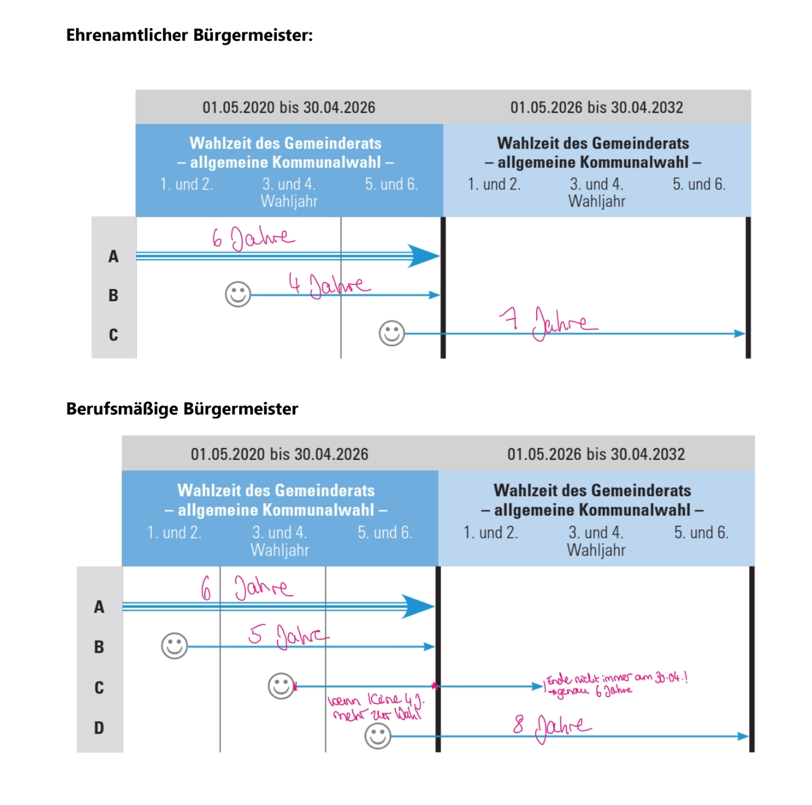
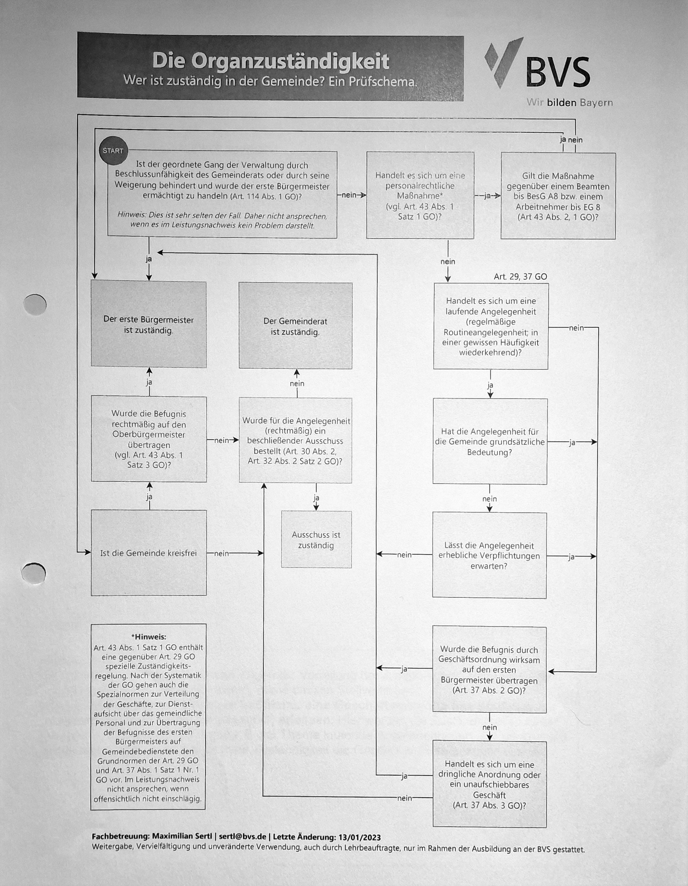

Gemeindeordnung für den Freistaat Bayern
- Vorbemerkungen
- ERSTER TEIL
- Wesen und Aufgaben der Gemeinde
- 1. ABSCHNITT
- Begriff, Benennung und Hoheitszeichen
- 2. ABSCHNITT
- Rechtsstellung und Wirkungskreis
- 3. ABSCHNITT
- Gemeindegebiet und gemeindefreies Gebiet
- 4. ABSCHNITT
- Rechte und Pflichten der Gemeindeangehörigen
- Art. 15
- Einwohner und Bürger
- Art. 16
- Ehrenbürgerrecht
- Art. 17
- Wahlrecht
- Art. 18
- Mitberatungsrecht (Bürgerversammlung)
- Art. 18 a
- Bürgerbegehren und Bürgerentscheid
- Art. 18 b
- Bürgerantrag
- Art. 19
- Ehrenamtliche Tätigkeit
- Art. 20
- Sorgfalts- und Verschwiegenheitspflicht
- Art. 20 a
- Entschädigung
- Art. 21
- Benutzung öffentlicher Einrichtungen; Tragung der Gemeindelasten
- 5. ABSCHNITT
- Gemeindehoheit
- ZWEITER TEIL
- Verfassung und Verwaltung der Gemeinde
- 1. ABSCHNITT
- Gemeindeorgane und ihre Hilfskräfte
- Art. 29
- Hauptorgane
- a) Der Gemeinderat und seine Ausschüsse
- Art. 30
- Rechtsstellung; Aufgaben des Gemeinderats
- Art. 31
- Zusammensetzung des Gemeinderats
- Art. 32
- Aufgaben der Ausschüsse
- Art. 33
- Zusammensetzung der Ausschüsse; Vorsitz
- b) Der erste Bürgermeister und seine Stellvertreter
- Art. 34
- Rechtsstellung des ersten Bürgermeisters
- Art. 35
- Rechtsstellung der weiteren Bürgermeister
- Art. 36
- Vollzug der Beschlüsse des Gemeinderats
- Art. 37
- Zuständigkeit des ersten Bürgermeisters
- Art. 38
- Verpflichtungsgeschäfte; Vertretung der Gemeinde nach außen
- Art. 39
- Stellvertretung; Übertragung von Befugnissen
- c) Die berufsmäßigen Gemeinderatsmitglieder
- Art. 40
- Berufung und Aufgaben
- Art. 41
- Rechtsstellung
- d) Gemeindebedienstete
- Art. 42
- Notwendigkeit bestimmter Fachkräfte
- Art. 43
- Anstellung und Arbeitsbedingungen
- Art. 44
- Stellenplan
- 2. ABSCHNITT
- Geschäftsgang
- Art. 45
- Geschäftsordnung und Geschäftsgang der Ausschüsse
- Art. 46
- Geschäftsleitung
- Art. 47
- Sitzungszwang; Beschlußfähigkeit
- Art. 47 a
- Sitzungsteilnahme durch Ton-Bild-Übertragung
- Art. 48
- Teilnahmepflicht; Ordnungsgeld gegen Säumige
- Art. 49
- Ausschluß wegen persönlicher Beteiligung
- Art. 50
- Einschränkung des Vertretungsrechts
- Art. 51
- Form der Beschlußfassung; Wahlen
- Art. 52
- Öffentlichkeit
- Art. 53
- Handhabung der Ordnung
- Art. 54
- Niederschrift
- Art. 55
- (weggefallen)
- 3. ABSCHNITT
- Verwaltungsgrundsätze und Verwaltungsaufgaben
- 4. ABSCHNITT
- Stadtbezirke und Gemeindeteile
- DRITTER TEIL
- Gemeindewirtschaft
- 1. ABSCHNITT
- Haushaltswirtschaft
- Art. 61
- Allgemeine Haushaltsgrundsätze
- Art. 62
- Grundsätze der Einnahmebeschaffung
- Art. 63
- Haushaltssatzung
- Art. 64
- Haushaltsplan
- Art. 65
- Erlaß der Haushaltssatzung
- Art. 66
- Planabweichungen
- Art. 67
- Verpflichtungsermächtigungen
- Art. 68
- Nachtragshaushaltssatzungen
- Art. 69
- Vorläufige Haushaltsführung
- Art. 70
- Mittelfristige Finanzplanung
- 2. ABSCHNITT
- Kreditwesen
- 3. ABSCHNITT
- Vermögenswirtschaft
- a) Allgemeines
- Art. 74
- Erwerb und Verwaltung von Vermögen, Wertansätze
- Art. 75
- Veräußerung von Vermögen
- Art. 76
- Rücklagen, Rückstellungen
- Art. 77
- Insolvenzverfahren
- Art. 78
- und 79 (weggefallen)
- b) Öffentliche Nutzungsrechte
- Art. 80
- Verbot der Neubegründung; Übertragungsbeschränkungen
- Art. 81
- Lasten und Ausgaben
- Art. 82
- Ablösung und Aufhebung
- Art. 83
- Art und Umfang der Entschädigung
- c) Von der Gemeinde verwaltete nichtrechtsfähige (fiduziarische) Stiftungen
- Art. 84
- Begriff; Verwaltung
- Art. 85
- Änderung des Verwendungszwecks; Aufhebung der Zweckbestimmung
- 4. ABSCHNITT
- Gemeindliche Unternehmen
- Art. 86
- Rechtsformen
- Art. 87
- Allgemeine Zulässigkeit von Unternehmen und Beteiligungen
- Art. 88
- Eigenbetriebe
- Art. 89
- Selbständige Kommunalunternehmen des öffentlichen Rechts
- Art. 90
- Organe des Kommunalunternehmens; Personal
- Art. 91
- Sonstige Vorschriften für Kommunalunternehmen
- Art. 92
- Unternehmen in Privatrechtsform
- Art. 93
- Vertretung der Gemeinde in Unternehmen in Privatrechtsform
- Art. 94
- Sonstige Vorschriften für Unternehmen in Privatrechtsform
- Art. 95
- Grundsätze für die Führung gemeindlicher Unternehmen
- Art. 96
- Anzeigepflichten
- Art. 97
- bis 99 (weggefallen)
- 5. ABSCHNITT
- Kassen- und Rechnungswesen
- 6. ABSCHNITT
- Prüfungswesen
- VIERTER TEIL
- Staatliche Aufsicht und Rechtsmittel
- 1. ABSCHNITT
- Rechtsaufsicht und Fachaufsicht
- Art. 108
- Sinn der staatlichen Aufsicht
- Art. 109
- Inhalt und Grenzen der Aufsicht
- Art. 110
- Rechtsaufsichtsbehörden
- Art. 111
- Informationsrecht
- Art. 112
- Beanstandungsrecht
- Art. 113
- Recht der Ersatzvornahme
- Art. 114
- Bestellung eines Beauftragten
- Art. 115
- Fachaufsichtsbehörden
- Art. 116
- Befugnisse der Fachaufsicht
- Art. 117
- Genehmigungsbehörde
- Art. 117 a
- Ausnahmegenehmigungen
- 2. ABSCHNITT
- Rechtsmittel
- FÜNFTER TEIL
- Übergangs- und Schlußvorschriften
Gemeindeordnung für den Freistaat Bayern GO
Allgemeines Verwaltungsrecht
Handlungsgrundsätze der Verwaltung
Vorrang und Vorbehalt des Gesetzes
Rechtsstaatsprinzip → Art. 20 Abs. 3 GG (und Art. 3 und 55 Nr. 1 BV) → Ausprägungen:
•Vorrang des Gesetzes = kein Handeln gegen das Gesetz
•Vorbehalt des Gesetzes = kein Handeln ohne Gesetz
Pflichtgemäßes Ermessen und Ermessensreduktion; Auslegung unbestimmter Rechtsbegriffe
Ermessen ist auf der Rechtsfolgeseite eröffnet, wenn keine zwingenden Vorschriften („Muss-Vorschriften“) vorliegen,
z.B. „muss“ oder „hat“ (z.B. § 15 Abs. 2 GastG). Bei Mussvorschriften gibt es nur eine richtige Entscheidung der Behörde.
(Sonderfall „Soll-Vorschriften“: hier darf in besonderen Ausnahmefällen von der Vorschrift abgewichen werden)
Bei Ermessensentscheidungen („Kann-Vorschriften“) kann die Verwaltung entscheiden,
ob und welche Rechtsfolge an die Erfüllung des Tatbestandes geknüpft ist.
Zu erkennen: „kann“, „darf“, „ist befugt“, „ist berechtigt“ … (z.B. Art. 18 Abs. 2 LStVG)
Aber: Der Tatbestand muss unzweifelhaft vorliegen. Ist der Tatbestand rechtlich unbestimmt => unbestimmter Rechtsbegriff.
Z.B. „gefährliches Tier einer wildlebenden Art“ aus Art. 37 Abs. 1 LStVG => ggf. zu Gutachten eines Sachverständigen
Ausübung des Ermessens nach Art. 40 BayVwVfG:
•Ausüben !
•entsprechend dem Zweck der Ermächtigung
•gesetzliche Grenzen des Ermessens einhalten, Art. 3 GG, Art. 8 Abs. 1 und 2 LStVG
Fehler:
•Ermessens-Nichtgebrauch: Behörde stellt keine Ermessenserwägungen an
•Ermessens-Überschreitung: Entscheidung der Behörde liegt außerhalb der Grenzen
•Ermessens-Fehlgebrauch: Behörde hat maßgebliche Punkte nicht berücksichtigt, oder sachfremde Erwägungen angestellt
Willkürverbot (Selbstbindung der Verwaltung und die Bedeutung von Richtlinien)
= Ausfluss des Gleichheitsgrundsatzes aus Art. 3 Abs. 1 GG, Art. 118 Abs. 1 BV => Rechtsanwendungsgleichheit
•Wesentlich gleiche Sachverhalte dürfen nicht ungleich behandelt werden.
•Wesentlich ungleiche Sachverhalte dürfen nicht gleich behandelt werden.
Grundsatz der Verhältnismäßigkeit
ungeschriebene Verfassungsnorm. Gute Ausformulierung in einem einfachen Gesetz z.B. in Art. 8 Abs. 1 und 2 LStVG.
Die Behörde soll im Einzelfall eine vernünftige Entscheidung in Hinblick auf das Verhältnis zwischen angestrebtem Ziel und eingesetzten Mittel treffen.
Prüfung:
•(Legitimer Zweck)
•geeignet
•erforderlich
•angemessen
Bestimmtheitsgrundsatz
Handeln der Verwaltung muss hinreichend bestimmt sein.
Für VA: Art. 37 Abs. 1 BayVwVfG. „Der Bürger muss genau wissen, was er zu tun oder zu unterlassen hat.“
Treu und Glauben
allgemeiner Rechtsgrundsatz, § 242 BGB,
verpflichtet Behörde zu sozial angemessene Ausübung der Befugnisse
Wirtschaftlichkeit
Bürgergerechtes Verhalten
Das Verwaltungsverfahren
1. die Tätigkeit einer Behörde, Art. 1 Abs. 2 BayVwVfG, 2. hat Außenwirkung,
3. zielt auf Erlass Verwaltungsakt (Art. 35 BayVwVfG) oder Abschluss öffentlich-rechtlicher Vertrag (Art. 54 bis 62 BayVwVfG),
4. umfasst abschließende Verfahrenshandlung (Erlass VA oder Abschluss ö-r Vertrag); diese ist gem.
Art. 9 BayVwVfG Teil des Verwaltungsverfahrens
Handelnde im Verwaltungsverfahren: handelnde Behörde tritt in Rechtsbeziehung zu anderem Rechtssubjekt (z.B. Bürger), dem sog. "Beteiligten" (Art. 13 BayVwVfG)
Ziel Verwaltungsverfahren ist Verwaltungsakt:
Vorverfahrensperiode: Antrag bzw. interne Vorermittlung von Amts wegen
Verwaltungsverfahren: Vorbereitung des Verwaltungsakts (insbes. Sachverhaltsermittlung) // Erlass des Verwaltungsakts
Verfahrensabwicklung: Erfüllung bzw. Vollstreckung des Verwaltungsakts
Ziel Verwaltungsverfahren ist öffentlich-rechtlicher Vertrag:
Vorverfahrensperiode: Vorverhandlungen
Verwaltungsverfahren: Abschluss des öffentlich-rechtlichen Vertrags
Verfahrensabwicklung: Erfüllung bzw. Vollstreckung des öffentlich-rechtlichen Vertrags
Verwaltungsvollstreckungsrecht, Art. 18 ff. VwZVG, VA der Polizei: Art. 70 ff. PAG
Allgemeine Vollstreckungsvoraussetzungen
•vollstreckungsfähiger Inhalt (Art. 18 Abs. 1 VwZVG, Geld oder Tun oder Unterlassen, nicht feststellender VA)
•VA muss vollstreckbar sein (Art. 19 Abs. 1 Nr. 1 bis 3 VwZVG, auch rechtswidriger VA)
•Schuldner hat seine Pflicht nicht erfüllt (Art. 19 Abs. 2 VwZVG)
Voraussetzungen laut öffentl. Finanzwirtschaft:
vollstreckungsfähiger Titel vorhanden (durch VA / Subordinationsrechtlicher Vertrag);
Vollstreckbarkeit des Verwaltungsaktes, Art. 19 Abs. 1 VwZVG:
Wenn der VA nicht mehr mit Rechtsmitteln anfechtbar ist
Wenn der Rechtsbehelf keine aufschiebende Wirkung hat
Wenn die sofortige Vollziehung angeordnet ist
Nichterfüllung der Verpflichtung, Art. 19 Abs. 2 VwZVG
besondere Vollstreckungsvoraussetzungen bei Geldforderungen (Art. 23 Abs. 1 Nr. 1 bis 3 VwZVG)
•Bescheid zugestellt
•Forderung fällig
•Mahnung erfolglos
besondere Vollstreckungsvoraussetzungen bei Tun, Dulden oder Unterlassen
•Zuständigkeit (Art. 30 VwZVG)
•Androhung und Zustellung (Art. 36 VwZVG)
•weiteres abhängig vom Zwangsmittel, z.B.
•vertretbare Handlung bei einer Ersatzvornahme nach Art. 32 VwZVG, oder
•uneinbringliches Zwangsgeld und kein Erfolg versprechender unmittelbarer Zwang bei der Ersatzzwangshaft nach Art. 33 VwZVG
Zwangsmittel
•Zwangsgeld (Art. 31 VwZVG) Regelzwangsmittel für Ge- und Verbote
•Ersatzvornahme (Art. 32 VwZVG) für vertretbare Handlungen, anstelle und auf Kosten des Pflichtigen
•Unmittelbarer Zwang (Art. 34 VwZVG) = Einwirkung auf Personen oder Sachen durch körperliche Gewalt (vgl. Art. 78 PAG)
•Ersatzzwangshaft (Art. 33 VwZVG) → Art. 104 Abs. 2 Satz 1 GG → Verwaltungsgericht
Walter
Verwaltungsakt, Allgemeinverfügung Bekanntgabe, Wirksamkeit
Bekanntgabe Verwaltungsakt
Art. 41 BayVwVfG
wichtig, weil nach Art. 43 Abs. 1 Satz 1 BayVwVfG die Wirksamkeit davon abhängt
Art. 41 Abs. 1 BayVwVfG => Bekanntgabe formfrei, aber Sondervorschriften möglich, z.B. Art 66 Abs. 1 Satz 6 BayBO:
◦einfache Bekanntgabe: Art. 41 Abs. 2 BayVwVfG → 3-Tages-Fiktion
(früherer Zugang unerheblich, Fiktion ist keine Frist und tritt auch am Samstag, Sonntag oder Feiertag ein)
◦Zustellung (Art. 41 Abs. 5 BayVwVfG → VwZVG
Wirksamkeit Verwaltungsakt, Bestandskraft Verwaltungsakt
Art. 43 BayVwVfG setzt den Begriff der Wirksamkeit voraus
äußere Wirksamkeit = Verwaltungsakt hat den Adressaten erreicht → Verwaltungsverfahren ist abgeschlossen → Rechtsbehelfsfrist beginnt zu laufen
innere Wirksamkeit = Verwaltungsakt hat Geltung (z.B. Ab der Wirksamkeit der Konzession kann die Gaststätte eröffnet werden)
formelle Bestandskraft = Unanfechtbarkeit = es ist kein zulässiger Rechtsbehelf mehr gegeben (Rechtsbehelfsfrist ist abgelaufen oder Rechtsweg völlig ausgeschöpft)
materielle Bestandskraft folgt automatisch auf formelle Bestandskraft = in der Sache bindend (vgl. § 77 SGG)
Rechtsbehelfsfrist (§§ 70, 74, 58 Abs. 2 VwGO) → Unsicherheit der Behörde (vgl. § 80 Abs. 1 Satz 1 VwGO)
Aufhebung Verwaltungsakt
Enthält ein VA (formelle oder materielle) Fehler, so ist er rechtswidrig. Rechtswidrige VAe sind entweder nichtig (Art. 44 BayVwVfG) oder anfechtbar.
Rechtsfolgen nichtiger Verwaltungsakt, Verwaltungsakt nichtig
ENTWEDER:
Fehler -> rechtswidrig -> nichtig nach Art. 44 BayVwVfG -> Art. 44 Prüfen in Reihenfolge: 1. Abs. 2, 2. Abs. 3, 3. Abs. 1
ODER:
Fehler -> rechtswidrig -> anfechtbar
VA ist NICHT nichtig, aber fehlerhaft --> ist anfechtbar
- Form- / Verfahrensfehler heilen Art. 45 BayVwVfG oder
- offenbare Unrichtigkeiten berichtigen Art. 42 BayVwVfG
Verwaltungsakt wegbekommen
1) rechtswidrig -> Rücknahme Art. 48 BayVwVfG
2) rechtmäßig -> Widerruf Art. 49 BayVwVfG
3) rechtswidrig + Kläger in seinen Rechten verletzt -> § 113 Abs. 1 VwGO
Wann liegt ein nichtiger VA vor? (= Tatbestand) → Art. 44 Abs. 2, 3, 1 BayVwVfG -> Reihenfolge kommentieren
Grundsatz = Abs. 1:
(1) Ein Verwaltungsakt ist nichtig, soweit er an einem besonders schwerwiegenden Fehler leidet und dies bei verständiger Würdigung aller in Betracht kommenden Umstände offenkundig ist. „Der Fehler steht dem VA auf die Stirn geschrieben“
Rechtsfolge der Nichtigkeit: Art. 43 Abs. 3 BayVwVfG „unwirksam“
VA hat nie bestanden
Kann keine Wirkung (innere Wirksamkeit) entfalten
braucht nicht aufgehoben zu werden
maximal (deklaratorische) Feststellung nach Art. 44 Abs. 5 BayVwVfG
Rechtsfolgen anfechtbarer Verwaltungsakt, nur anfechtbar
Tatbestand: VA hat Fehler, aber die Fehler sind nicht so schwer, dass sie den VA nach Art. 44 BayVwVfG nichtig machen
Heilungsmöglichkeit für Verfahrens- und Formfehler nach Art. 45 Abs. 1 BayVwVfG
Rechtsfolge:
•VA ist trotz Fehler gültig!
•Behörde „muss“ den VA nach Art. 48 BayVwVfG zurücknehmen
•Unterschiedliche Sichtweisen: Betroffener klagt und das Verwaltungsgericht hebt den Bescheid auf, wenn der Kläger dadurch in seinen Rechten verletzt ist (§ 113 Abs. 1 Satz 1 VwGO)
Offenbare Unrichtigkeiten im VA
wie Schreib- und Rechenfehler, machen den VA zwar unrichtig, aber nicht rechtswidrig. Die Behörde kann dies nach Art. 42 Satz 1 BayVwVfG berichtigen.
Verwaltungsakt Arten
Unterscheidung nach Wirkungsformen:
belastend: verlangt Tun, Dulden, Unterlassen;
beschränkt / entzieht Rechte; lehnt beantragte Begünstigungen ab;
trifft ungünstige Feststellung
Begünstigender Verwaltungsakt:
begründet / bestätigt Berechtigung; beseitigt Belastung;
tifft günstige Feststellung
Verwaltungsakt mit Mischwirkung:
teils belastend, teils begünstigend, zb. beantragte Genehmigung, Infostand aufzustellen, wird nur unter Auflage erteilt, dass Grundfläche
des Stands 5 qm nicht überschreiten darf
Verwaltungsakt mit Doppelwirkung:
zb. Baugenehmigung für Bauherrn begünstigend, für Nachbarn belastend
Verwaltungsakt nach Regelungsinhalt / nach Inhalt
Befehlender Verwaltungsakt: zwingt Betroffenen zu Tun, Dulden, Unterlassen
Gestaltender Verwaltungsakt: regelt Rechte, Pflichten des Betroffenen und
gestaltet damit das zwischen ihm und der Behörde bestehende Verwaltungsrechtsverhältnis
Feststellender Verwaltungsakt: stellt bestehende Verwaltungsrechtsverhältnisse zwischen
Behörde und Bürger fest, ohne sie in irgendwelcher Weise zu begründen, zu ändern oder aufzuheben;
zb. Feststellung des Besoldungsdienstalters bei Beamten, der Gemeinnützigkeit einer Organisation, der Staatsangehörigkeit
einer Person
Verwaltungsart nach Zustandekommen
einseitig: allein durch Behörde von Amts wegen erlassen, zb. Widerruf gaststättenrechtl. Erlaubnis;
mitwirkungsbedürftig: VA kann in rechtm. Weise nur unter Mitwirkung des Betroffenen ergehen, Mitwirkung = meistens Antragstellung,
zb. gaststättenrechtl. Erlaubnis, Fahrerlaubnis, Baugenehmigung, Bewohnerparkausweis, Ernennung Beamter
Verwaltungsakt Nebenbestimmungen Art. 36 BayVwVfG: Auflagen, aufschiebende Bedingung
Verwaltungsakt mit Bedingung
Bedingung Art. 36 Abs. 2 Nr 2 BayVwVfG: Wirksamkeit hängt von Eintritt eines zukünftigen Ereignisses ab.
Aufschiebende Bedingung: Eintritt der Wirksamkeit hängt von Bedingung (zukünftiges Ereignis) ab
Auflösende Bedingung: Wirkung des VA entfällt mit dem Eintritt des zukünftigen Ereignisses
Widerrufsvorbehalt: ermöglicht Behörde auch bei begünstigendem VA den späteren Widerruf ohne Entstehen eines
Entschädigungsanspruchs; kann allgemein oder beschränkt festgelegt werden
Auflage (Art. 36 Abs. 2 Nr. 4 BayVwVfG): Hauptregelung wird unbedingt wirksam und Auflage muss - wenn der Verpflichtete sie nicht erfüllt -
ggf. mit Mitteln des Verwaltungszwangs durchgesetzt werden. Dem Betroffenen wird über den Inhalt des VA hinaus ein zusätzliches Tun, Dulden, Unterlassen vorgeschrieben
Auflagenvorbehalt: (Nr. 5) schafft für Behörde Rechtsgrundlage, nachträgliche Auflagen zu einem VA zu setzen, ändern oder ergänzen.
Ausübung des Vorbehalts erfolgt ggf. durch gesonderten VA. (Bsp: "Sondernutzungserlaubnis erfolgt unter dem jederzeitigen Vorbehalt der Setzung
nachträglicher Auflagen" oder "unter dem Vorbehalt der Ergänzung der Auflagen zur Gewährleistung der Verkehrssicherheit")
Aufhebung Bescheide
Unterscheidung Rücknahme Widerruf
Unterscheidung zwischen der Aufhebung innerhalb und außerhalb des
Widerspruchsverfahrens:
Unterscheide:
•Aufhebung des VA nach Art. 48, 49 BayVwVfG
•„Aufhebung des VA“ als Unterfall der Abhilfe im Widerspruchsverfahren nach § 72 VwGO
Rücknahme Bescheid
Art. 48 BayVwVfG → Voraussetzung rechtswidriger VA
„Generalregel“ des Art. 48 Abs. 1 Satz 1 BayVwVfG
•grds. ist eine Rücknahme immer möglich
•Rücknahme hat im Ermessen zu erfolgen (Gesetzmäßigkeit der Verwaltung abwägen gegen Rechtssicherheit und Rechtsfrieden einschl. die Interessen der Betroffenen)
Einschränkungen für einen nicht begünstigenden VA: keine
Verbot der Rücknahme für einen begünstigenden VA auf Geld- oder Sachleistungen1 (Art. 48 Abs. 2 BayVwVfG):
Vertrauen des Begünstigten auf den Bestand des Verwaltungsakts und
Schutzwürdigkeit des Vertrauens
◦regelmäßig dann, wenn der Begünstigte das Geleistete verbraucht2 oder eine entsprechende Vermögensdisposition getroffen hat
◦aber nicht wenn Täuschung, Drohung oder Bestechung, falsche Angaben oder Kenntnis von der Rechtswidrigkeit
Rücknahme eines begünstigenden VA auf sonstige Leistungen (Art. 48 Abs. 3 BayVwVfG):
•keine über die Generalregel hinausgehenden Einschränkungen, aber Ermessen
•Rechtsfolge: Ausgleich des Vermögensnachteils
•Frist: Art. 48 Abs. 3 Satz 5 BayVwVfG
Widerruf Bescheide
Art. 49 BayVwVfG → Voraussetzung rechtmäßiger VA
Widerruf eines rechtmäßigen nicht begünstigenden VA (Art. 49 Abs. 1 BayVwVfG):
•stets möglich, außer
◦ein VA gleichen Inhalts müsste erneut erlassen werden (Ist-Vorschrift) oder
◦ein Widerruf wäre aus anderen Gründen unzulässig;
•Widerruf im Ermessen
Widerruf eines rechtmäßigen begünstigenden VA (Art. 49 Abs. 2 und 2a BayVwVfG)
•Einschränkungen aus Art. 49 Abs. 1 gelten auch hier
•es muss ein Fall aus Art. 49 Abs. 2 Nr. 1 – 5 BayVwVfG vorliegen
•bei Geld- oder Sachleistung (Abs. 2a) bei:
◦zweckwidriger Verwendung oder
◦Auflagenverstoß
•Frist: Art. 49 Abs. 2, 48 Abs. 4 BayVwVfG: 1 Jahr
•Zuständigkeit: Art. 49 Abs. 4
Kommunalrecht
Präsenz VL Kommunalrecht
Hauptorgane Gemeinde
Gemeinderat (= Vertretung der Gemeindebürger) + 1. Bgm / Oberbürgermeister
Hilfsorgane: Ausschüsse
Passives Wahlrecht
Rechtsgrundlage für Gemeinderatsmitglieder:
Art. 21 Abs. 1 GLKrWG Wählbarkeitsvoraussetzungen: Unionsbürger im Sinne Art. 1 Abs. 2 GLKrWG;
18. LJ vollendet; seit min. 3 Monaten im Wahlkreis eine Wohnung. Ausnahme Obdachlose
Art. 21 Abs. 2 GLKrWG Wählbarkeitsausschlüsse:
Nicht wählbar ist, wer am Wahltag 1. vom Wahlrecht ausgeschlossen ist (Art. 2 GLKrWG);
infolge deutschen Richterspruchs die Wählbarkeit oder Fähigkeit zur Bekleidung öffentl. Ämter nicht besitzt;
sich wegen vorsätzl. Straftat in Strafhaft od. in Sicherungsverwahrung befindet
Inkompatibilität (Amtshindernis) Art. 31 Abs. 3 GO
Mit Inkompatibilitätsbestimmung sollen Interessenskollisionen ausgeschlossen werden, die dadurch entstehen können,
dass selbe Person Amt im dienstrechtlichen Sinn in der Gemeinde innehat (z.B. MA im Rathaus, der für Sitzungsdienst zuständig ist
Der gewählte Kandidat muss sich entweder für das Amt oder für das Mandat entscheiden!
Aktives Wahlrecht
Art. 28 Abs. 1 Satz 2 GG, Art. 17 GO, Art. 1, 2 GLKrWG
Wahlberechtigt bei Gemeinde- / Landkreiswahlen sind alle Personen, die am Wahltag:
Unionsbürger sind, 18. LJ vollendet, mind. 2 Monate Aufenthalt mit Schwerpunkt Lebensbeziehungen im Wahlkreis, nicht nach Art. 2 vom Wahlrecht ausgeschlossen
Wahlzeit
Ehrenamtl. GR-Mitglieder werden für 6 Jahre gewählt.
Beginn Wahlzeit = der auf die Wahl folgende 1. Mai, Art. 23 Abs. 1 GLKrWG
Art. 31 GO Zusammensetzung Gemeinderat
GR heißt in Städten Stadtrat, in Mörkten Marktgemeinderat, Art. 30 Abs. 2 GO
BGM + ehrenamtl. Gemeinderatsmitglieder (Art. 31 Abs. 2 S. 2 GO) = Gesetzl. Mitgliederzahl = Sollstärke (Mitgl.zahl in Art. 31 Abs. 2 S. 2 GO);
BGM + ehrenamtl. Gemeinderatsmitglieder (+ berufsmäßige Gemeinderatsmitglieder zählen extra (Art. 40, 41 GO) - nur beratende Funktion, + Beamte der Gemeinde)
Der Bürgermeister ist Mitglied des Gemeinderats,
aber kein Gemeinderatsmitglied! Zu Sollstärke gehört auch der Bürgermeister.
Sollstärke = Bürgermeister + gesetzliche Zahl Gemeinderatsmitglieder (auch wenn jmd. Nur krank ist)
Iststärke = Bürgermeister + gesetzliche Zahl Gemeinderatsmitglieder – (minus) Ausschluss von der Sitzung wegen fortgesetzter erheblicher Störung
; Art. 53 Abs. 1 Satz 3 GO – (minus) Endgültiges Ausscheiden aus dem Gemeinderat
Sollstärke:
Gemeinde: 7.500 Einwohner:
Sollstärke Gemeinderat = 21 (= 20 GR-Mitglieder + 1. BGM!)
wenn welche krank sind, aber 11 anwesend: beschlussfähig
wenn 2 ausgeschlossen sind (Iststärke 19): 10 müssen anwesend sein: beschlussfähig
Iststärke
Wenn Sollstärke vorübergehend nicht erreicht wird -> Iststärke in "Übergangszeit"
Zwei Wege führen zu Iststärke:
1. Ausschluss von Sitzung wg. fortgesetzter erhebl. Störung, Art. 53 Abs. 1 Satz 3 GO;
2. Endgültiges Ausscheiden aus GR
Merke: Iststärke hat nichts mit tatsächlicher Anwesenheit der Mitglieder in der Sitzung zu tun!
Iststärke: Art. 31 Abs. 2 GO;
- Art. 53 GO;
- Art. 48 GLKrWG
+ Art. 31 Abs. 1 GLKrWG
Endgültiges Ausscheiden aus Gemeinderat
Gesetze:
Art. 48 Abs. 1 Satz 1 Nr. 1 GLKrWG: Verlust der Wählbarkeit;
Art. 48 Abs. 1 Satz 1 Nr. 2 GLKrWG, Art. 31 Abs. 4 GO: Verweigerung Eidleistung od. Ablegen des Gelöbnisses;
Art. 31 Abs. 3 GO, Art. 48 Abs. 2 Satz 1 Nr. 3 GLKrWG: Inkompatibilität;
Art. 48 Abs. 1 Satz 1 GLKrWG: Niederlegung des Ehrenamts;
Art. 48 Abs. 3 GO: Amtsaberkennung;
Tod
Bei Sätzen 1 u. 2 Art. 48 Abs. 1 GLKrWG: Listennachfolger rückt nach
über Ausscheiden und Nachrücken entscheidet (rechtsbegründender Beschluss) i.d.R. Gemeinderat, Art. 48 Abs. 3 Satz 2 GLKrWG
1. BGM hat Listennachfolger entspr. Art. 47 Abs. 2 GLKrWG unverzüglich schriftlich von seiner Wahl zu verständigen und
aufzufordern, binnen 2 Wochen zu erklären, ob er Wahl annimmt
Wahl gilt als abgelehnt, wenn nicht innerhalb der Frist schriftlich oder zur Niederschrift bei Gemeindeverwaltung,
bei Landkreiswahlen beim Landratsamt, angenommen wurde
Iststärke bis zum Nachrücken des Listennachfolgers
Art. 48 Abs. 3 Satz 3, Art. 47 Abs. 2 GLKrWG; Iststärke verdrängt die Sollstärke!
So sind zb Anwesenheits- und Stimmberechtigtenmehrheit (Art. 47 Abs. 2 GO) aufgrund der Iststärke zu ermitteln.
Ausschlüsse wegen fortgesetztem erheblichen Störens
Ausschluss für Rest der Sitzung Art. 53 Abs. 1 GO, Ausschluss für zwei weitere Sitzungen Art. 53 Abs. 2 GO
Aufgaben Gemeinderat
Willensbildungsorgan:
Art. 29 GO, Art. 30 Abs. 2 GO;
GR entscheidet, wenn nicht 1. Bgm zuständig ist Art. 43 Abs. 2, 37 GO,
wenn Aufgabe nicht beschließendem Ausschuss übertragen wurde Art. 32 Abs. 2 GO
Kontrollorgan: Art. 30 Abs. 3, Art. 36 GO, überwacht Gemeindeverwaltung + Ausführung GR-Beschlüsse;
hat Informationsrecht (Bürgermeister muss Fragen beantworten, mündl. Vortrag in Sitzung,
Sitzungsvorlagen, Beschlussvorlagen)
hat Akteneinsichtsrecht ggü. BGM -> Gemeinderat als Ganzes, nicht einzelne Mitglieder!
Gemeinderat Entlastungsmöglichkeiten
- Bildung Ausschüsse Art. 32 Abs. 2 GO;
- Übertragung auf 1. Bgm Art. 37 Abs. 2 GO, Art. 43 Abs. 1 Satz 3 GO
Rechte Gemeinderatsmitglieder
- Freie Mandatsausübung: nur eigenem Gewissen unterworfen, an keine Weisungen gebunden
- Entschädigungsanspruch Art. 20a GO; Entschädigung muss angenommen werden, ist nicht übertragbar
- Stimmrecht: Teilnahmepflicht, kein Mitglied darf sich der Stimme enthalten Art. 48 Abs. 1 GO
- Geschäftsordnungsantragsrecht: jedes Mitglied darf während Sitzung Anträge stellen (Anträge beeinflussen Sitzungsverlauf, Abstimmung muss sofort erfolgen, zb. Erweiterung Tagesordnung, Ausschluss Öffentlichkeit, Vertagung od. Absetzung, Namentliche Abstimmung)
- Recht auf Teilnahme an allen Gemeinderatssitzungen: alle müssen geladen werden, außer vorher beim Bgm. Entschuldigt
- Recht auf ordnungsgemäße Ladung
- Sachantragsrecht: Recht beim Bgm. Vor Sitzung Anträge zu stellen (1. Bgm hat Vorprüfungsrecht u formelles Verwerfungsrecht, kein materielles Verwerfungsrecht, ständig wiederholende Sachanträge ohne Änderung Sach- u Rechtslage muss BGM nicht mehr auf Tagesordnung setzen)
- Recht auf Niederlegung des Ehrenamts
- Rederecht
- Recht auf Einsicht in die Niederschriften
- Recht auf Festhalten des Abstimmungsverhaltens in der Niederschrift (normalerweise nur Ergebnis enthalten)
- Recht auf Teilnahme an allen Ausschusssitzungen
- KEIN RECHT AUF Akteneinsichtsrecht (einzelne Mitglieder)
- KEIN RECHT auf Abhaltung einer Sitzung
- KEIN RECHT auf Sitzungsunterlagen
Pflichten Gemeinderatsmitglieder
- Pflicht, Eid zu leisten / Gelöbnis abzulegen Art. 31 Abs. 4 GO
(Dienstältestes GR Mitglied nimmt Eid vom Bürgermeister ab)
- Pflicht zur gewissenhaften Wahrnehmung der Aufgaben Art. 48 GO
- Pflicht zur Übernahme weiterer Aufgaben und Funktionen z.B. 2. / 3. Bürgermeister zu werden, in Ausschüsse gewählt zu werden
- Pflicht zur Sitzungsteilnahme
- Pflicht zur Verschwiegenheit Art. 20 Abs. 2 GO
- Pflicht zur Stimmabgabe mit Ja oder Nein (Stimmenenthaltungsverbot, Art. 48 Abs. 1 Satz 2 GO)
- Pflicht zur Information des ersten Bürgermeisters bei persönlicher Beteiligung (z.B. eigene Bauanträge) Art. 49 Abs. 1 GO
Fraktionen im Gemeinderat
Begriff nicht in GO definiert, GR-Mitglieder können sich zur erreichung gemeinsamer Ziele zu Fraktionen zusammenschließen (§ 5 Abs. 1 Satz 1 Mustergeschäftsordnung);
Fraktionen = Zusammenschlüsse gleichgesinnter GR-Mitgl. mit gemeinsamen Grundanschauungen u gemeinsamem Sachprogramm zur Abstimmung ihrer Vorstellungen, um so Ablauf der Meinungsbildung im GR zu straffen, steuern, erleichtern
Fraktion muss mind. 2 Mitglieder haben, sofern durch Geschäftsordnung nicht anders bestimmt (Empfehlung in Mustergeschäftsordnung: 3);
Auch Mitglieder von versch. Wahlvorschlägen gewählt, können Fraktion bilden
1. BGM gehört niemals Fraktion an
Ziel Fraktion = einheitl. Abstimmungsverhalten im GR
Der Bürgermeister
Wählbarkeitsvoraussetzungen:
Passives Wahlrecht Art. 17 GO, Art. 39 GLKrWG:
Jede Person, welche am Wahltag
- _Deutsche im Sinne des Art. 116 Abs. 1 GG ist
- Das _18. Lebensjahr_ vollendet hat
- im Falle der Bewerbung um das Amt des ehrenamtlichen Bürgermeisters seit __min. 3 Monaten_ im Wahlkreis eine Wohnung hat, die aber nicht Hauptwohnung sein muss, oder ohne eine Wohnung zu haben sich im Wahlkreis gewöhnlich aufhält
NICHT wählbar ist,
- wer vom Wahlrecht ausgeschlossen ist (Art. 2 GLKrWG);
Art. 39 Abs. 2 GLKrWG:
- wer infolge deutschen Richterspruchs die Wählbarkeit oder die Fähigkeit zur Bekleidung öffentlicher Ämter nicht besitzt;
- wer sich wegen einer vorsätzlichen Straftat in Strafhaft oder in Sicherheitsverwahrung befindet;
- Wer nachweisbar nicht die Gewähr dafür bietet, jederzeit für die freiheitlich demokratische Grundordnung im Sinne des GG und der BV einzutreten;
- Wer nachweisbar dienstunfähig ist
GILT NUR FÜR BERUFSMÄßIGE ERSTE BÜRGERMEISTER
- Wer zu Beginn der Amtszeit das 67. Lebensjahr vollendet hat (wird aber geändert)
Amtsbezeichnung Bürgermeister
Art. 34 Abs. 1, 2 GO, Art. 29 Abs. 1 KWBG:
kreisangehörige Gemeinde -> 1. BGM; Große Kreisstadt / Kreisfreie Stadt -> Oberbürgermeister
Rechtsstellung Bürgermeister
1. BGM ist Beamter der Gemeinde. Dienstherr ist die Gemeinde. Rechtsstellung entweder:
Ehrenbeamter (ehrenamtl. BGM) oder Beamter auf Zeit (berufsmäßiger BGM)
kreisfreie Gemeinden, Große Kreisstädte, kreisangehörige Gemeinden mit MEHR als 5.000 (= ab 5.001!!!) Einwohnern = kraft Gesetz Beamter auf Zeit (berufsmäßiger BGM)
Gemeinden bis einschl. 5.000 Einwohner = Kraft Gesetz Ehrenbeamter (ehrenamtl.)
Gemeinden bis 10.000 EW: Ausnahmen möglich, Art. 34 Abs. 2 GO. GR KANN Rechtsstellung BGM ändern durch: Satzung Art. 23 GO; die spätestens am 90. Tag vor BGM Wahl amtlich bekanntgemacht wurde (Art. 26 Abs. 2 GO);
Satzung gilt auch für künftige Amtszeiten, wenn GR nicht spätestens 90 Tage vor Wahl aufhebt
Keine Änderung möglich bei kreisfreien Gemeinden, Großen Kreisstädten u. sonst. Gemeinden mit mehr als 10.000 EW, BGM immer und unveränderbar Beamter auf Zeit
Amtszeit Bürgermeister: 6 Jahre, Art. 41 Abs. 1, Art. 42 Abs. 1 GLKrWG
Grundsätzlich Amtszeit BGM und GR deckungsgleich: 01.05. zb. 2020, endet am 30.04. zb. 2026
Amtszeit und Wahlzeit können auseinanderliegen; beachte Rechtsstellung des Bürgermeisters!
Ehrenamtl. BGM:

Aufgaben Bürgermeister
- Organ der Gemeinde Art. 29 ff. GO, insb. Art. 37 GO
Vorsitz im Gemeinderat Art. 36 Satz 1 GO, Art. 33 Abs. 2 GO
- Leiter der Gemeindeverwaltung Art 46 Abs. 1 Satz 1 GO
- Personalangelegenheiten Art. 43 Abs. 2, Abs. 1 Satz 3 GO
- Vollzugsorgan Art. 36 Satz 1 GO
- Vertritt Gemeinde nach Außen Art. 38 Abs. 1 Satz 1 GO
- Leiter der Gemeindeverwaltung Art 46 Abs. 1 Satz 1 GO
- Vorsitzender des Gemeinderats: bereitet Beratungsgegenstände vor, beruft Gemeinderat ein, handhabt Ordnung und unterzeichnet Niederschrift, Eröffnung und Beendigung Gemeinderatssitzungen Art. 46 Abs. 2 GO
Erster Bgm führt Vorsitz im GR und vollzieht seine Beschlüsse, aber nur soweit er nicht persönlich beteiligt (Sonst sein Vertreter) ist Art. 49 GO (in der Sitzung Art. 49 GO; vor und nach der Sitzung: nach einer Ansicht Art. 49 GO analog)
Beispiele: - Errichtung eines Nottestaments § 2249 BGB
-Wahrnehmung Geschäfte als Jagdvorstand Art. 11 Abs. 5 BayJG
- Eheschließungsstandesbeamter § 2 Abs. 3 AVPStG
Bürgermeister als Organ der Gemeinde - Prüfung Organzuständigkeit

Willensbildungsorgan: allgemeine Zuständigkeit BGM; Zuständigkeit Personalangelegenheiten
1. Schritt: Art. 37 Abs. 1 Satz 1 Nr. 1 GO = Einfache Geschäfte der laufenden Verwaltung (ca 50 cent / Einwohner = laufende Angelegenheit)
2. Schritt: Art. 37 Abs. 2 Satz 1 GO = ausdrücklich durch die GeschO übertragene Aufgaben
3. Schritt: Art. 37 Abs. 3 GO = Eilentscheidungen
Bürgermeister als Vollzugsorgan
1. BGM vollzieht GR Beschlüsse, z.b. Kauf FW-Auto, Aufstellung Brunnen, Zuschuss Sportverein...
Beispiele Zuständigkeit Bürgermeister:
Kauf FW-Auto 400.000 eur -> keine laufende Angelegenheit, keine Eilentscheidung -> keine Aufgabe des Bürgermeisters
Kauf eines iPads für 500 eur – laufende Angelegenheit, Bürgermeister zuständig
Vollzug Hundesteuersatzung (Erlass von Bescheiden) -> laufende Angelegenheit, Einnahme, kann nur Gemeinderat machen, Art. 37 Abs. 2 GO
Kauf Toilettenpapier – laufende Angelegenheit, keine erhebliche Verpflichtung, Bürgermeister zuständig
Verkauf Grundstück: keine laufende Angelegenheit, Gemeinderat
Klage + Widerspruch = KEINE Eilzuständigkeit
Bürgermeister als gesetzlicher Vertreter, Außenvertretungsrecht
BGM vertritt Gemeinde nach außen, Art. 38 Abs. 1 Satz 1 GO; zb.
Abschluss, Kündigung Verträge; Ausfertigung von Satzungen u. Verordnungen; Erhebung einer Klage; Gemeinde repräsentieren
Bürgermeister als Leiter der Verwaltung
Geschäftsleitung: Organisation, ordnungsgemäße Erledigung;
Geschäftsverteilung: Verteilung der Aufgaben (meist) durch Geschäftsverteilungsplan
Bürgermeister als Vorsitzender des Gemeinderats und der Ausschüsse
Vorbereitung Beratungsgegenstände; Sitzungsunterlagen;; Einberufung zu den Sitzungen; Sitzungen eröffnen, pausieren, schließen;; Handhabung der Ordnung und Unterzeichnung der Niederschrift; VOLLZUG DER BECHLÜSSE
Stellvertretung Bürgermeister
Allgemeine Stellvertretung Art. 39 Abs. 1 GO - Weisungen sind nicht zulässig
Verhinderungsvertretung: in der Reihenfolge: 2. Bürgermeister, 3. Bürgermeister
GR muss aus Mitte der ehrenamtl. GR-Mitglieder EINEN , KANN auch 2 Stellvertreter wählen, Art. 35 Abs. 1 Satz 1 GO.
Wählbar: wer Voraussetzungen für Wahl 1. BGM erfüllt, Art. 39 GLKrWG;
Wahl: geheime Abstimmung; mehr als Hälfte abgegebener gültiger Stimmen, sonst Wiederholung
Tatsächliche Verhinderung: z.B. Tod, Urlaub, Krankheit, Ausscheiden aus Amt, längere dienstl. Abwesenheit, dauernde Dienstunfähigkeit, Beurlaubung, vorläufige Dienstenthebung
Rechtliche Verhinderung: z.B. Art. 49 GO persönliche Beteiligung; Art. 38 KWBG Interessenskollision
Befugnisse bei Vertretung
Merke: Alles geht über! Im Verhinderungsfall gehen sämtliche Aufgabenbereiche des 1. BGM auf Stellvertreter über; Weisungen des 1. BGM sind ungültig!
Besondere Stellvertretung (Delegation) - Entlastungsvertretung
Hat mit Verhinderung 1. BGM nichts zu tun, dient zur Entlastung des 1. BGM; hier kann 1. BGM Weisungen erteilen; Art. 39 Abs. 2 GO
Befugnisübertragung nach Art. 39 Abs. 2 GO: auf 2. od 3. BGM; auf GR-Mitglieder; auf Gemeindebedienstete
Aber auch: Art. 33 Abs. 2 GO: Verzicht auf Vorsitz in Ausschuss;
Art. 18 Abs. 3 Satz 3 GO: Verzicht auf Vorsitz in Bürgerversammlung
Rechtsfolgen: Bürgermeister handelt ohne Vertretungsbefugnis
Umfang Vertretungsmacht ist auf Befugnisse beschränkt, Art. 39 Abs. 1 GO
Rechtsfolgen Verwaltungsakt: grundsätzlich rechtswidrig anfechtbar, somit wirksam vgl. Art. 44 Abs. 3 Nr. 3, Art. 1, 2 BayVwVfG
Ausnahme: Beamtenrechtliche Ernennungen sind nichtig § 11 BeamtStG!!
Ernennungen des berufsmäßigen Gemeinderatsmitglieds sind nichtig Art. 12, 14 KWBG, § 11 BeamtStG
Rechtsfolgen Privatrechtliche Verträge: schwebend unwirksam;
wird GR Beschluss nachgeholt ist Vertrag von Anfang an wirksam, wenn GR oder Ausschuss Genehmigung verweigern von Anfang an unwirksam
Ausschüsse der Gemeinde Art. 32 GO
Vorberatende Ausschüsse Art. 32 Abs. 1 GO, Art. 33, Art. 45 Abs. 2 Satz 1 GO:
-Angelegenheiten vorbereiten;
-Keine Entscheidungen;
-Nur Empfehlungen, Anregungen,
Vorschläge an GR
Beschließende Ausschüsse (= Gemeindesenate) Art. 32 Abs. 2 GO, Art. 33, Art. 45 Abs. 2 Satz 2 GO:
Nur „eingeschränkt“ möglich:
- Entscheidet final anstelle des Gemeinderats;
- In Angelegenheiten, welche vom GR übertragen worden sind;
- Beschlüsse sind wie Gemeinderatsbeschlüsse
Einschränkungen Beschließende Ausschüsse:
Übertragungsverbot Art. 32 Abs. 2 Satz 2 Nr. 1 – 10 GO, keine Satzungen außer Bau
Reklamationsrecht Art. 32 Abs. 3 Satz 2 GO (1. BGM, Stellvertreter, 1/3 stimmb. Ausschussmitglieder, ¼ der Gemeinderatsmitglieder – ohne BGM, können Nachprüfung beantragen)
Besondere Ausschüsse
Rechnungsprüfungsausschuss, Art. 103 GO
- Ab über 5000 EW Pflicht;
- 3 – 7 GR-Mitglieder;
- BGM nicht automatisch Vorsitzender (kontrolliert sich nicht selbst);
Vorsitzender wird von GR aus Mitte der bestellten Ausschussmitglieder gewählt
Werkausschuss Art. 88 Abs. 2 GO:
Gemeinde KANN Unternehmen in Form Eigenbetrieb betreiben; dann muss sie Werkausschuss bestellen; "Gemeinderat des Eigenbetriebs"
Ferienausschuss Art. 32 Abs. 4 GO: Vertreter des GR während vom GR festgelegter Ferienzeit (kann 6 Wochen Ferienzeit festlegen, dann muss er Ferienausschuss bilden)
Kein Übertragungsverbot und Reklamationsverbot
Während einer sechswöchigen Ferienzeit verdrängt der Ferienausschuss den Gemeinderat und die sonstigen allgemeinen Ausschüsse
Zusammensetzung Ausschüsse Art.33 Abs. 1 GO
Art.33 Abs. 1 GO regelt Zusammensetzung in der Geschäftsordnung (Organisationermessen)
Untergrenze 3 Mitglieder, Wählerwille muss sich in Ausschüssen wiederfinden, keine Obergrenze
Ausschuss = verkleinertes Spiegelbild des Gemeinderats (Stärkeverhältnis der Parteien / Wählergruppen beachten), "Spiegelbildlichkeit"
Bei der Zusammensetzung der Ausschüsse ist dem Stärkeverhältnis der im Gemeinderat vertretenen
Parteien und Wählergruppen Rechnung zu tragen.
Vorschlagsrecht
Nachdem Ausschusssitze auf Fraktionen, Gruppen, und Ausschussgemeinschaften verteilt
wurden, müssen Mitglieder in Ausschuss berufen werden
Die Fraktionen, Gruppen oder Ausschussgemeinschaften haben das alleinige Vorschlagsrecht!
Die Mitglieder werden durch Gemeinderatsbeschluss bestellt.
Die Vorgeschlagenen sind bei Beschlussfassung nicht persönlich beteiligt und müssen deshalb an der
Abstimmung teilnehmen.
Mitglieder des Ausschusses müssen Gemeinderatsmitglieder sein!!!!
Stellvertreter der Ausschussmitglieder
Stellvertretung des Vorsitzenden: Der erste Bürgermeister wird im Falle seiner Verhinderung im Ausschussvorsitz vom zweiten
Bürgermeister vertreten (allgemeine Stellvertretung, Art. 39 Abs. 1 Satz 1 GO)
Stellvertretung der Ausschussmitglieder
Für die Verhinderung eines Ausschussmitglieds sollten Stellvertreter berufen werden, die im
Verhinderungsfall Sitz und Stimme im Ausschuss haben.
Die Stellvertreter werden wie die ordentlichen Mitglieder durch Gemeinderatsbeschluss
bestellt
Zur Ausschusssitzung ist immer nur das Ausschussmitglied zu laden, nicht der Stellvertreter.
Das Ausschussmitglied muss seine Stellvertreter unterrichten.
Ausschussgemeinschaften
Diese Art der Kooperation setzt nicht voraus, dass ein gemeinsamer, unter den Beteiligten
abgestimmter Standpunkt vertreten wird. Es handelt sich vielmehr um reine Bündnisse zu dem
alleinigen Zweck, einen oder mehrere Vertreter in die Ausschüsse entsenden zu können
Erhalten Ausschussgemeinschaften durch ihren Zusammenschluss einen Sitz in den
Ausschüssen, so ist rechnerisch notwendiger Umkehrschluss, dass ein Sitz weniger zugunsten
der anderen Gruppierungen vergeben wird.
Eine Ausschussgemeinschaft steht dann einer Wählergruppe
Ausscheiden aus dem Ausschuss
Rücktritt:
entspr. Art. 19 Abs. 1 GO, wenn wichtiger Grund vorliegt.
Analog Art. 30 Abs. 3 Satz 3 KommZG, Art. 7 Abs. 1 GLKrWG ist Entscheidung GR erforderlich
Kraft Gesetzes: durch Tod, Ausscheiden aus GR Art. 48 GLKrWG: (Niederlegung des Amtes Art. 48 Abs. 1 S. 2 GLKrWG;
(Verlust Wählbarkeit Art. 48 Abs. 1 Satz 1 Nr. 1, Art. 21 GLKrWG);
(Unvereinbarkeit Art. 48 Abs. 1 Satz 1 Nr. 3 GLKrWG, Art. 31 Abs. 3 GO)
Ausscheiden aus Fraktion / Gruppe, Art. 33 Abs. 3 Satz 2 GO
Parteiverbot Art. 49 GLKrWG; Auflösung Art. 32 Abs. 5 GO
Ausscheiden durch Abberufung: durch GR Beschluss, wenn wichtiger Grund, Art. 19 Abs. 2 GO
Änderung Stärkeverhältnis Art. 33 Abs. 1 Satz 2 GO i.V.m. Art. 33 Abs. 3 Satz 1 GO
Organe des Landkreises:
Hauptorgane: Kreisausschuss Art. 26 ff LKrO; Kreistag Art. 23 ff. LKrO; Landrat Art. 31 ff. LKrO
Landrat
Der Landrat ist Beamter des Landkreises,
- Er vertritt den Landkreis nach außen,
- Der Landrat ist immer Beamter auf Zeit
Landrat kann nicht der Landrat eines anderen
Landkreises sein,
- Hat aufgrund seiner Doppelstellung zwei „Gesichter“,
- Leiter der Staatsbehörde und Leiter der Kreisbehörde.
Der Landrat führt den Vorsitz im Kreistag, im
Kreisausschuss
und in allen weiteren Ausschüssen (keine Delegation
möglich)
Wird für die Dauer von sechs Jahren gewählt.
- Landrat kann ausschließlich berufsmäßig tätig sein
Kreistag
Der Kreistag besteht aus dem Landrat und den Kreisräten, Art. 24 Abs. 1 LKrO.
Auch hier gibt es eine Inkompatibilitätsvorschrift.
- Der Kreistag ist die Vertretung seiner Bürger.
Er entscheidet über alle grundsätzlichen Angelegenheiten und überwacht auch die
Kreisverwaltung
Kommunale Gebietskörperschaft (Landkreis oder Bezirk) wird durch Kollegialorgan
verwaltet, soweit nicht vom Kollegialorgan bestellte Ausschüsse beschließen oder
monokratisches Organ (Landrat oder Bezirkstagspräsident) selbstständig entscheidet
Kreisausschuss
Der Kreisausschuss ist ein Pflichtausschuss, welcher die Verhandlungen des Kreistags
vorbereitet Art. 26 Satz 2 LKrO.
Der Kreistag bestimmt, inwieweit der Ausschuss vorberatend und inwieweit er
beschließend tätig wird.
Der Ausschuss hat eine vom Gesetz festgelegte Mitgliederzahl abhängig von der
Einwohnerzahl Art. 27 Abs.1 LKrO
Bürgerbegehren
Formelle Rechtmäßigkeit Bürgerbegehren Art. 18a Abs. 4 bis 6 GO
1. Antrag an Gemeinde, Art. 18a Abs. 4 Satz 1 GO
2. Fragestellung mit Ja oder Nein - Entscheidung, Art. 18a Abs. 4 Satz 1 GO, keine beeinflussenden Formulierungen!
3. Begründung, Art. 18a Abs. 4 Satz 1 GO
4. Bis zu 3 Vertretungsberechtigte Art. 18a Abs. 4 Satz 1 GO
5. Unterstützung durch gültige Unterschriften von Gemeindebürgern - zwischen 10% und 3% je nach Gemeindegröße, Art. 18a Abs. 5, 6 GO
Materielle Rechtmäßigkeit Bürgerbegehren Art. 18a Abs. 1 und 3 GO
1. muss Angelegenheit des eigenen Wirkungskreises sein, Art. 18a Abs. 1, Art. 7, 57 GO
2. Angelegenheit darf nicht in Ausschlusskatalog des Art. 18a Abs. 3 GO fallen
3. Begehren darf nicht gegen geltendes Recht verstoßen, Art. 20 Abs. 3 GG (was GR nicht darf, darf auch Bürgerschaft nicht)
VL Notizen Kommunalrecht
Gemeinde „Volk“: Einwohner, Angehöriger, Bürger
Art. 15 GO Einwohner und Bürger
Abs. 1 Gemeindeangehörige = Einwohner
Abs. 2 Bürger = Gemeindeangehörige die aktives Wahlrecht besitzen (Art. 1 GLKrWG)
Art. 19 Bürger verpflichtet zur Übernahme gemeindlicher Ehrenämter
Beispiele: ehrenamtl. Gemeinderatsmitglied, Art. 31 Abs. 2 GO
ehrenamtliche (nicht berufl.) Bürgermeister, Art. 34, 35 GO
Ortssprecher, Art. 60a GO
Mitglieder Wahlorgane bei Kommunalwahlen, Art. 4 Abs. 2, Art. 7 GLKrWG
Wahl zum Gemeinderatsmitglied, obwohl nicht kandidiert:
Grundsätzlich verpflichtet Art. 19 Abs. 1 Satz 1 GO,
ABER gem. Art. 48 Abs. 1 Satz 2 Halbsatz 1 GLKrWG kann gewählte Person Übernahme des Amts ablehnen. Halbsatz 2: 19 GO findet keine Anwendung.
Art. 16 GO: Ehrenbürgerrecht:
Abs. 1 Gemeinden können Persönlichkeiten, die sich um sie besonders verdient gemacht haben, zu Ehrenbürgern ernennen.
Abs. 2 wegen unwürdigen Verhaltens widerrufen mit 2/3 Mehrheit der stimmberechtigten Mitglieder des Gemeinderats
(Bsp. Vorsätzl. Straftat mit mehrjähriger Freiheitsstrafe erfüllt Tatbestand unwürdiges Verhalten)
„unwürdiges Verhalten“ = unbestimmter Rechtsbegriff = Verhalten, das aus Sicht eines objektiven, unvoreingenommenen Betrachters mit der Stellung und besonderem Ansehen eines Ehrenbürgers schlechthin unvereinbar ist.
Widerruf: Aberkennung Bezeichnung Ehrenbürger = Berührung persönlicher Rechtsstellung, belastender Verwaltungsakt -> Anfechtungsklage statthaft, § 42 Abs. 1 Alt. 1 VwGO
Rechte Bürger
Individuelle Rechte: z.B. Teilnahme an Gemeinderatssitzungen Art. 52 Abs. 2 GO
Rechte in der Gruppe: z.B. Bürgerbegehren und -entscheid Art. 18a GO
Individuelle Rechte:
Benutzungsrecht öffentl. Einrichtungen, Art. 21 Abs.1 Satz 1 GO;
Teilnahmerecht öffentl. Sitzungen, Art. 52 Abs. 2 HS 1 GO;
Einsichtsrecht in Niederschriften öffentl. Sitzungen, Art. 54 Abs. 3 S. 2 GO;
Rederecht Bürgerversammlungen, Art. 18 Abs. 3 Satz 1 GO;
Informationsrecht aufgr. Bekanntmachungspflicht, Art. 26 Abs. 2 GO, Art. 51 Abs. 1 LStVG,
Petitionsrecht, formlose Rechtsbehelfe, Art. 17 GG, Art. 115 BV, subsidiör: Art. 56 Abs. 3 GO,
Wahlrecht; aktiv und passiv
Gruppenrechte:
Bürgerversammlung Art. 18 GO;
Bürgerbegehren, -entscheid Art. 18a GO;
Bürgerantrag, Art. 18b GO
Kommunales Selbstverwaltungsrecht
Vorschriften, aus denen sich Selbstverwaltungsrecht ergibt: Art. 11 Abs. 2 Satz 2 BV;
Art. 28 Abs. 2 Satz 1 GG; Art. 1 Satz 1 GO; Art. 7 GO
NICHT: Art. 22 GO; Art. 1 Abs. 3 GG; Art. 58, 3 GO
Selbstverwaltungsrecht beschränkt durch: Gesetze
nach Art. 28 Abs. 2 Satz 1 GG
Rechtsstellung der Gemeinden
Zutreffende Aussagen:
Gemeinden sind entweder kreisangehörig oder kreisfrei. Rechtsgrundlage: Die Gemeinden sind kreisangehörig oder kreisfrei, Art. 5 Abs. 1 GO.
Kreisfreie Städte erfüllen alle Aufgaben, die ansonsten die Kreis- und die Kreisverwaltungsbehörde erledigen. Grundlage: Kreisfreie Städte erfüllen die Aufgaben des staatlichen Landratsamtes und des Landkreises, Art. 9 Abs. 1 Sätze 1 und 2 GO.
FALSCHE Aussagen:
Die Große Kreisstadt erfüllt im Gegensatz zur „normalen“ kreisangehörigen Gemeinde zusätzliche Aufgaben im eigenen Wirkungskreis
Alle Großen Kreisstädte haben mindestens 30.000 Einwohner
Durch einen Stadtratsbeschluss kann eine Gemeinde mit 60.000 Einwohnern die Rechtsstellung von „kreisangehörig“ auf „kreisfrei“ ändern.
GO gilt unmittelbar:
kreisfreie Stadt; Gemeinde; Große Kreisstadt; Marktgemeinde
GO gilt NICHT unmittelbar für:
Landkreis
Aufgaben des ersten Bürgermeisters
Vollzug der Gemeinderatsbeschlüsse Art. 36 Satz 1 GO
Vorbereitung der Gemeinderatssitzungen Art. 46 Abs. 2 Satz 1 GO
Beanstandung von Gemeinderatsbeschlüssen Art. 59 Abs. 2 GO
Vertretung seiner Gemeinde nach außen Art. 38 Abs. 1 GO
Höhergruppierung einer Mitarbeiterin im Bürgerbüro von Entgeltgruppe
6 nach Entgeltgruppe 8
Kauf von Büromaterial für die Verwaltung
Kauf von Blumen als Geschenk für ehrenamtliche Mitarbeiter
Leitung Gemeindeverwaltung
Vorsitz Bürgerversammlung, Gemeinderatssitzungen, Ausschusssitzungen
KEINE Aufgaben des Bürgermeisters:
Erhöhung der Eintrittsgebühren für das gemeindliche Schwimmbad
Vorsitz in Vereinen der Gemeinde
Pflichtaufgaben Gemeinde
Freiwillige Aufgaben und Pflichtaufgaben im Art. 57 GO
1. Abs. 1 Satz 1 = freiwillige Aufgaben, Sollaufgaben
2. Abs. 1 Satz 2 i. V. mit Spezialvorschrift = Pflichtaufgaben
3. Abs. 2 Satz 1 = Pflichtaufgabe Trinkwasserversorgung
4. Abs. 2 Satz 2 i. V. mit Spezialvorschrift = Pflichtaufgaben
5. Sonstige freiwillige Aufgaben, gestützt auf Allzuständigkeit
Ermessen Pflichtaufgaben
KEIN Entschließungsermessen (OB Gemeinde tätig wird)
NUR Gestaltungsermessen (WIE Gemeinde Aufgabe erfüllt)
Pflichtaufgaben Gemeinde
Abhalten einer Bürgerversammlung Art. 18 GO
Erlass einer Haushaltssatzung Art. 63 Abs. 1 GO
Bildung Rechnungsprüfungsausschuss in Gemeinden über 5.000 Einwohner, Art. 103 Abs. 2 GO
Erlass einer Geschäftsordnung, Art. 45 Abs. 1 GO
Trinkwasserversorgung! Art. 57 Abs. 2 Satz 1 GO
KEINE Pflichtaufgaben Gemeinde
Bau eines Kinderspielplatzes
Betrieb eines Heimatmuseums
Bildung eines Finanzausschusses
Rechte und Pflichten Gemeinderatsmitglieder:
Freies Mandat (Art. 30 Abs. 1 Satz 1 GO)
Niederlegung des Ehrenamts - auch ohne wichtigen Grund – (Art. 48
Abs. 1 Satz 2 GLKrWG)
Entschädigungsanspruch – wird in Satzung festgelegt (Art. 20a Abs. 1
Satz 2 GO)
Akteneinsichtsrecht (aber nur für Niederschriften Art. 54 Abs. 3 Satz 1 GO
und Prüfungsberichte Art. 102 Abs. 4 GO)
Recht auf Abhalten einer Sitzung (ein Viertel der Gemeinderatsmitglieder
muss das fordern; Art. 46 Abs. 2 Satz 3 GO)
Recht auf eine ordnungsgemäße Ladung zu den Sitzungen (Art. 47 Abs. 2,
Art. 45 Abs. 2, Art. 55 GO, GeschO)
Teilnahmepflicht (Art. 48 Abs. 1 Satz 1 GO)
Teilnahmerecht (Art. 48 Abs. 1 GO)
Abstimmrecht (Art. 48 Abs. 1 GO)
Abstimmpflicht (Art. 48 Abs. 1 Satz 2 GO)
Rederecht (Art. 36 Satz 1, Art. 53 Abs. 1 Satz 1 GO)
Definition Selbstverwaltungsrecht:
Örtliche Angelegenheiten dürfen im Rahmen der Gesetze eigenverantwortlich geregelt werden.
FALSCHE Definitionen: Alle Angelegenheiten, die die Gemeinde betreffen, dürfen eigenverantwortlich geregelt werden, unabhängig vom Wirkungskreis. -
Jede Gemeinde kann selbst entscheiden, ob sie die örtlichen Angelegenheiten erfüllt.
- Die Gemeinde darf im übertragenen Wirkungskreis nur tätig werden, wenn sie ein förmliches Gesetz dazu ermächtigt.
Rechnungsprüfungsausschuss
Ist eine Auflösung des Rechnungsprüfungsausschusses (durch Bürgermeister) zulässig?
Der Rechnungsprüfungsausschuss zählt zu den sogenannten besonderen Ausschüssen.
Eine grundsätzliche, generelle Verpflichtung zur Bildung eines Rechnungsprüfungsausschusses in allen Gemeinden besteht nicht.
Allerdings ist in Gemeinden mit mehr als 5 000 Einwohnern die Bildung eines Rechnungsprüfungsausschusses vorgeschrieben (Art. 103 Abs. 2 GO, Art. 57 Abs. 2 Satz 2 GO).
Da die Gemeinde Wiesenau laut Sachverhalt 5 900 Einwohner hat, muss es folglich einen Rechnungsprüfungsausschuss geben. Somit ist eine Auflösung nicht möglich.
Darüber hinaus ist zu beachten, dass es nicht in die Zuständigkeit des ersten Bürgermeisters fällt, Ausschüsse zu bilden bzw. aufzulösen, sondern dies ist dem Gemeinderat vorbehalten.
Grundsätzlich ist dies in Art. 32 Abs. 1, Abs. 2 Satz 1 GO geregelt; das Recht, Ausschüsse auf-zulösen, ergibt sich aus Art. 32 Abs. 5 GO.
Selbst in einer Gemeinde mit unter 5 000 Einwohnern könnte ein „freiwillig“ gebildeter Rechnungsprüfungsausschuss daher nicht durch den ersten Bürgermeister,
sondern nur durch den Gemeinderat wieder aufgelöst werden.
Kann Bürgermeister Vorsitzender des Rechnungsprüfungsausschusses sein?
Der Gemeinderat bildet den Rechnungsprüfungsausschuss aus seiner Mitte
(Art. 103 Abs. 2 GO). Die erste Bürgermeisterin ist nach Art. 31 Abs. 1 GO Mitglied
des Gemeinderates. Entsprechend kann die erste Bürgermeisterin auch Mitglied
dieses Ausschusses sein.
Der Gemeinderat bestimmt ein Ausschussmitglied zum Vorsitzenden (Art. 103
Abs. 2 GO). So kann also die erste Bürgermeisterin - unabhängig von der
Sinnhaftigkeit eines solchen Vorgehens - durchaus zur Vorsitzenden des
Rechnungsprüfungsausschusses bestimmt werden.
Der Zusatz in Art. 103 Abs. 2
Halbsatz 2 GO, dass Art. 33 Abs. 2 GO keine Anwendung findet, bedeutet
lediglich, dass der erste Bürgermeister im Rechnungsprüfungsausschuss nicht
(wie in den anderen Ausschüssen) kraft Gesetz Vorsitzender ist
Bürgerversammlung: Pflichtaufgabe,
Die Gemeinden müssen jährlich mindestens eine Bürgerversammlung abhalten (Art. 18 Abs. 1 Satz 1 GO).
Es handelt sich um eine Pflichtaufgabe des eigenen Wirkungskreises (Art. 57 Abs. 2 Satz 2 GO i.V.m. Art. 18 GO).
Die Angelegenheiten des eigenen Wirkungskreises unterliegen der Rechtsaufsicht (Art. 109 Abs. 1 GO).
Die Rechtsaufsichtsbehörden der kreisangehörigen Gemeinden sind die Landratsämter (Art. 110 Satz 1 GO).
Im Fall der kreisangehörigen Gemeinde Wiesenau ist damit das Landratsamt Biberg die zuständige Rechtsaufsichtsbehörde (Art. 110 Satz 1 GO, vgl. dazu auch Art. 37 Abs. 1 Satz 2 LKrO),
die bei dem vorliegenden Verstoß entsprechend einschreiten könnte.
Bürgerversammlung Diskussionsthemen möglich
Ausweisung eines neuen Baugebietes,
Aktion „Gesunde Pause“ an der örtlichen Grundschule,
Errichtung eines Spielplatzes,
Sanierung der Mehrzweckhalle
Kann NICHT in Bürgerversammlung diskutiert werden: Flüchtlingspolitik der Bundesregierung
Klausurfrage Nutzungszwang: Können die Bürger zur Benutzung der Bücherei durch die Gemeinde gezwungen werden?
Die Verpflichtung, die gemeindliche Bücherei mindestens zwei Mal im Jahr zu
benutzen, ist ein Eingriff in die allgemeine Handlungsfreiheit (Art. 2 Abs. 1 GG).
Aus dem Rechtsstaatsprinzip des Art. 20 Abs. 3 GG und dem Grundsatz des
Vorbehalts des Gesetzes (Demokratieprinzip, Art. 20 Abs. 1 GG) ergibt sich die Verpflichtung, dass für jeden Eingriff in die Rechte der Bürger eine ausdrückliche
Ermächtigung durch ein förmliches Gesetz vorliegen muss.
Die Gemeinde
Kurzensee wird durch Art. 23 Satz 1 und Art. 24 Abs. 1 Nr. 1 GO zwar ermächtigt,
eine Satzung für die Benutzung ihrer Bücherei zu erlassen. Auch ist in Art. 24
Abs. 1 Nrn. 2 und 3 GO eine Ermächtigung für die Gemeinde enthalten, die
Benutzung gemeindlicher Einrichtungen für die Einwohner zur Pflicht zu machen.
Allerdings ist der sogenannte Anschluss- und Benutzungszwang nur für die in
Art. 24 Abs. 1 Nrn. 2 und 3 GO genannten Einrichtungen zulässig. Die
gemeindliche Bücherei fällt nicht darunter.
Klausurfrage: Ist es zulässig, die Eigentümer des neuen Baugebietes „Rastberg“ an die gemeindliche Trinkwasserversorgung anzuschließen?
Die Verpflichtung, die gemeindliche Trinkwasserversorgung zu benutzen, ist ein
Eingriff in die allgemeine Handlungsfreiheit (Art. 2 Abs. 1 GG). Nach dem
Grundsatz des Vorbehalts des Gesetzes (Art. 20 Abs. 3 GG - Rechtsstaatsprinzip)
erfordert jeder Eingriff in die Rechte der Bürger eine ausdrückliche Ermächtigung
durch ein förmliches Gesetz.
Nach Art. 24 Abs. 1 Nr. 2 GO kann aus Gründen des
öffentlichen Wohls u. a. zum Zwecke der Wasserversorgung der Anschluss und
die Benutzung zur Pflicht auferlegt werden (= Anschluss- und Benutzungszwang).
Der Anschlusszwang stützt sich auf Art. 24 Abs. 1 Nr. 2 GO, dadurch kann in die
allgemeine Handlungsfreiheit aus Gründen des öffentlichen Wohls eingegriffen
werden
Klausurfrage: Ist es zulässig, dass sich ein Gemeinderatsmitglied bei Beschlüssen zu Finanzthemen seiner Stimme enthält?
Art. 48 Abs. 1 Satz 2 GO verbietet ausdrücklich die Stimmenthaltung, verpflichtet
also die ehrenamtlichen Gemeinderatsmitglieder, mit JA oder NEIN zu stimmen.
Das Gemeinderatsmitglied kann sich damit bei keiner der Abstimmungen im Gremium -auch
nicht bei Finanzthemen- seiner Stimme enthalten.
Bonus Ausführung: Ausnahmsweise kann sich ein Mitglied der Stimme enthalten, wenn es einen
genügenden Entschuldigungsgrund hat (Art. 48 Abs. 2 GO). Der
Ausnahmetatbestand „genügende Entschuldigung“ ist sehr eng zu fassen, weil
der Gesetzgeber – im Gegensatz zu den Parlamenten – ausdrücklich das „Farbe
bekennen“ fordert.
Bei einem Verstoß kann der Gemeinderat ein Ordnungsgeld beschließen (Art. 48
Abs. 2 GO). Die verbotswidrigen Stimmenthaltungen berühren die Gültigkeit des
Beschlusses aber nicht, weil die Beschlüsse mit der Mehrheit der Abstimmenden
gefasst werden (Art. 51 Abs. 1 Satz 1 GO).
Mitglieder Gemeinderat
Mitglieder des Gemeinderats können NICHT sein:
Ehrenamtliche Gemeinderatsmitglieder der Nachbargemeinde
Der erste Bürgermeister der eigenen Gemeinde
Die Leiterin der Rechtsaufsichtsbehörde der Gemeinde
Mitglieder KÖNNNEN sein:
Der Geschäftsleitende Beamte der Nachbargemeinde; Der hauptberufliche Arbeiter auf dem Bauhof der Gemeinde
Klausurfrage korrekte Aussagen
FALSCHE Aussagen
Gemeinderatsmitglieder dürfen sich bei Beschlüssen ihrer Stimme enthalten.;
Über die Art der Abstimmung (offene oder geheime Abstimmung) entscheidet der erste Bürgermeister.
Alle Beratungsgegenstände sind öffentlich.;
Der erste Bürgermeister ist Gemeinderatsmitglied
Hauptorgane Landkreis:
Landrat, Kreisausschuss, Kreistag
NICHT: Landratsamt, Kreisverwaltung
Inhalt und Grenzen staatliche Aufsicht sind bestimmt durch den Wirkungskreis
Klausur: KEIN Gemeinderatsbeschluss benötigt
erster BGM Gemeinde mit 8.000 Einwohnern benötigt keinen Gemeinderatsbeschluss:
Abschluss eines Kaufvertrages für einen neuen Bürostuhl für sein Vorzimmer, Art. 29, 37 Abs. 1 Satz 1 Nr. 1 GO
Gemeinderatsbeschluss WIRD benötigt:
Kauf eines Grundstücks für die Erweiterung des Friedhofes, Einstellung eines Mitarbeiters (EG 11 / A 10),
Widerruf des Ehrenbürgerrechts, Änderung des Flächennutzungsplans
Klausur: Beginn Verwaltungsverfahren
Jmd. stellt für Veranstaltung Antrag auf Erlaubniserteilung nach Art. 19 Abs. 3 Satz 1 Nr. 3
LStVG erforderlichen Antrag auf Erlaubniserteilung bei der Gemeindeverwaltung
Richtige Aussage: Die Gemeindeverwaltung Wiesenau muss hier ein Verwaltungsverfahren
nach Art. 22 Satz 2 Nr. 1 BayVwVfG durchführen
Grundsätzlich entscheidet eine Behörde nach pflichtgemäßem Ermessen, ob und wann
Sie ein Verwaltungsverfahren durchführt (Art. 22 Satz 1 BayVwVfG). Eine Ausnahme ist
dann gegeben, wenn - wie im vorliegenden Fall - ein Antrag vorliegt und die Behörde
tätig werden muss (Art. 22 Satz 2 Nr. 1 BayVwVfG
Klausur: Erlaubnis / Ablehnung Veranstaltung Eingriffsverwaltung oder Leistungsverwaltung
Richtige Aussagen: Bei der Erteilung der Erlaubnis zur Durchführung der Vergnügungsparty
wird die Gemeindeverwaltung Wiesenau als Eingriffsverwaltung tätig.
Der Vorbehalt einer solchen Erlaubnis aus dem LStVG stellt einen
Grundrechtseingriff dar
Richtig: Wird der Antrag auf Erlaubnis zur Durchführung der Vergnügungsparty
abgelehnt, wird die Gemeindeverwaltung Wiesenau als Eingriffsverwaltung
tätig.
Welche Art der Aufgabenerfüllung liegt vor? (Eingriffsverwaltung etc.)
Ob im Einzelfall eine begünstigende oder belastende Entscheidung getroffen wird, ist bei der
Beurteilung unerheblich
Eingriffsverwaltung
Im Bereich der Eingriffsverwaltung erfolgt seitens der Verwaltung
ein ordnender Eingriff in die Rechtsposition des Bürgers. Hierbei ist maßgebend, ob
aufgrund des vollzogenen Gesetzes ein Grundrechtseingriff gegeben is
Leistungsverwaltung
Aufgabe der
Leistungsverwaltung ist die Gewährung einer Rechtsposition bzw. die Erhöhung von
bestehenden Rechten eines oder mehrerer Rechtssubjekte aus dem reinen Leistungsbzw.
Sicherungsgedanken heraus.
Planungsverwaltung
Handelt die Verwaltung als Planungsverwaltung,
bezweckt sie die Vorbereitung und Sicherstellung der Ausführung eines bestimmten
Vorhabens, meistens im Rahmen der Daseinsvorsorge.
Klausur: Rechtsbehelf gegen Ablehnung Erlaubnis Veranstaltung
Richtig: Paul Freund begehrt anstelle der Ablehnung die bereits beantragte
Erlaubnis. Statthafter Rechtsbehelf wäre die Verpflichtungsklage gemäß
§ 42 Abs. 1 Alternative 2 VwGO.
Die Ablehnung eines Antrags stellt einen Verwaltungsakt im Sinne des Art. 35 Satz 1
BayVwVfG dar. Welcher förmliche Rechtsbehelf statthaft ist, richtet sich nach dem
Rechtsschutzinteresse des Klägers.
Paul Freund begehrt nicht nur die Aufhebung der
Ablehnung, sondern die Verpflichtung zum Erlass eines begünstigenden Verwaltungsaktes
in Form der Erlaubnis. Statthafte Klage ist somit die Verpflichtungsklage gemäß § 42
Abs. 1 Alternative 2 VwGO.
Klausur: Rechtsschutz bei Ablehnung Erlaubnis Veranstaltung
Richtig: Statthaft wäre ein Antrag auf einstweilige Anordnung nach § 123 VwGO
beim Verwaltungsgericht.
Der Antragsteller begehrt in der Hauptsache einen begünstigenden Verwaltungsakt.
Im Rahmen des vorläufigen Rechtsschutzes wäre ein Antrag auf einstweilige Anordnung nach § 123 VwGO statthaft
Klausur: Art Verwaltungsakt bei Erlaubnis Veranstaltung
Richtig: mitwirkungsbedürftig und begünstigend.
Die Erlaubniserteilung erfolgt unter Mitwirkung des Beteiligten durch Antrag (mitwirkungsbedürftig).
Eine Erlaubnis stellt einen für den Beteiligten begünstigenden, weil vorteilhaften Verwaltungsakt dar.
Grundsätze des VerwaltungsHANDELNS
Richtig: Grundsatz der Bestimmtheit nach Art. 37 Abs. 1 BayVwVfG
Falsch: Grundsatz der Beteiligungsfähigkeit nach Art. 11 BayVwVfG; Grundsatz der Anhörung nach Art. 28 BayVwVfG;
Untersuchungsgrundsatz nach Art. 24 BayVwVfG; Grundsatz der Formfreiheit nach Art. 10 BayVwVfG
Grundsätze des VerwaltungsVERFAHRENS
Richtig: Grundsatz der Anhörung nach Art. 28 BayVwVfG
Weitere Grundsätze VerwaltungsVERFAHREN: Untersuchungsgrundsatz Art. 24 Abs. 1, 2 BayVwVfG;
Beratung und Auskunft Art. 25 BaVwVfG; Nichtförmlichkeit Art. 10 Satz 1 BayVwVfG;
Falsch: Grundsatz der Bestimmtheit nach Art. 37 Abs. 1 BayVwVfG;
Grundsatz der Wirtschaftlichkeit;Grundsatz des pflichtgemäßen Ermessens nach Art. 40 BayVwVfG;
Grundsatz des Willkürverbots nach Art. 3 Abs. 1 GG
Rechtsbehelfsbelehrung
Pflicht nur für Bundes- und Widerspruchsbehörden, ansonsten EMPFOHLEN
Soll Bürger über förmlichen Rechtsbehelf informieren, der im speziellen Einzelfall gegen einen Verwaltungsakt
erhoben werden kann. Niemand soll aus Rechtsunkenntnis die Möglichkeit versäumen, Rechtsbehelf zu erheben.
Ordnungsgemäße Rechtsbehelfsbelehrung hat Hinweise zu enthalten (§ 37 Abs. 6 VwVfG):
-Art des zulässigen Rechtsbehelfs (Widerspruch/ verwaltungsgerichtliche Klage);
-Stelle, bei der Rechtsbehelf einzulegen ist (Behörde / Verwaltungsgericht, jew. mit Bezeichnung und Sitz (postalische Anschrift nicht erforderlich);
-Rechtsbehelfsfrist (idR Monatsfrist, § 79 od. 74 VwGO)
Frist für Rechtsmittel, Rechtsbehelfe beginnt nur im Falle einer ordnungsgemäßen Rechtsbehelfsbelehrung zu laufen, § 58 Abs. 1, § 70 Abs. 2 VwGO
Ohne Rechtsbehelfsbelehrung: Ausschlussfrist zum Vorgehen gegen VA mit förml. Rechtsbehelfen = 1 Jahr § 58 Abs. 2 VwGO;
in der Zeit Ungewissheit für Behörde, ob Betr. dagegen vorgeht, Vollstreckbarkeit wird hinausgeschoben, vgl. Art. 19 Abs. 1 Nr. 1 VwZVG
Klausur: Rechtsbehelfsfrist
Gemeinde lehnt Antrag ab, Ablehnung mit ordnungsgemäßer Rechtsbehelfsbelehrung
Richtige Aussage: Die Rechtsbehelfsfrist von einem Monat setzt eine ordnungsgemäße Rechtsbehelfsbelehrung voraus
Gemäß § 58 Abs. 1 VwGO beginnt die Rechtsbehelfsfrist von einem Monat nur zu laufen, wenn dem Verwaltungsakt eine ordnungsgemäße Rechtsbehelfsbelehrung beigefügt ist.
Wenn diese nicht beiliegt oder unrichtig ist, beginnt anstelle der Rechts-behelfsfrist von einem Monat die Jahresfrist zu laufen (§ 58 Abs. 2 VwGO).
Eine Pflicht, eine Rechtsbehelfsbelehrung beizufügen, besteht nicht. Die Dauer der Rechtsbehelfsfrist ist gesetzlich geregelt (hier: § 74 Abs. 2 i. V. mit Abs. 1 Satz 2 VwGO).
FALSCHE Aussagen: Es besteht für die Gemeindeverwaltung Wiesenau die Pflicht, eine Rechtsbehelfsbelehrung beizufügen;
Die ordnungsgemäße Rechtsbehelfsbelehrung löst den Lauf der Jahres- frist aus.;
Ob ein Verwaltungsakt mit einer ordnungsgemäßen Rechtsbehelfsbelehrung versehen ist, hat keine Auswirkung darauf, innerhalb welcher Frist ein förmlicher Rechtsbehelf zulässig ist.;
Die Gemeindeverwaltung Wiesenau bestimmt, wie lange die Rechts- behelfsfrist dauert.
Bekanntgabe Bescheid:
Bescheid wird per Übergabe-Einschreiben geschickt.
Richtige Aussage: Ein Übergabe-Einschreiben ist eine Form der förmlichen Zustellung. Der Ablehnungsbescheid gilt gemäß Art. 4 Abs. 2 Satz 2 VwZVG am dritten Tag nach Aufgabe zur Post als bekanntgegeben
Die Bekanntgabe erfolgt hier durch förmliche Zustellung (Übergabe-Einschreiben) gemäß Art. 41 Abs. 5 BayVwVfG, Art. 4 Abs. 2 Satz 2 VwZVG am dritten Tag nach Aufgabe zur Post.
Förmliche Zustellung
Geregelt in Art. 1 Abs. 1 S. 1 VwZVG (Bayern), § 1 Abs. 1 VwZG (Bund)
Postzustellungsurkunde Art. 1 Abs. 5 VwZVG
Einschreiben: Art. 4 Abs. 1 VwZVG Einschränkung auf Einschreiben durch Übergabe (regelungsgleich mit Art. 41 Abs. 2 BayVwVfG einfache Bekanntgabe
gilt 3-Tagesfiktion für Zeitpunkt des Zugangs, Beweislastregelung zulasten Behörde; / Einschreiben
mit Rückschein (Vermerk auf Rückschein = Nachweis für Tatsache und Zeit Zustellung)
Zustellung gegen Empfangsbekenntnis: Art. 5 Abs. 1 Satz 1 VwZVG
Beschlussfähigkeit Gemeinderat
Art. 47 GO
(1)
Der Gemeinderat beschließt in Sitzungen.(= Sitzungszwang, nur in Sitzungen können Beschlüsse gefasst werden!)
(2)
Er ist beschlußfähig, wenn sämtliche Mitglieder ordnungsgemäß geladen sind und die Mehrheit der Mitglieder anwesend und stimmberechtigt ist.
(3)
Wird der Gemeinderat zum zweiten Mal zur Verhandlung über denselben Gegenstand zusammengerufen, so ist er ohne Rücksicht auf die Zahl der Erschienenen beschlußfähig. 2Bei der zweiten Einladung muß auf diese Bestimmung hingewiesen werden.
Ordnungsgemäße Ladung: 1. durch 1. BGM erfolgt (Außer Verhinderungsfall, 39 Abs. 1 S 1 GO, 46 ABs. 2 S 2 GO);
2. Form und Frist aus GeschO eingehalten (Art. 45 Abs. 2 GO);
3. Ladung enthält vollständige Tagesordnung (alle Beratungsgegenstände enthalten, so genau, dass Vorbereitung der Mitglieder möglich ist, Art. 46 Abs. 2 Satz 2 GO)
Klausur: Begriffe zur Prüfung der Beschlussfähigkeit des Gemeinderats
Ladung aller Mitglieder; Anwesenheitsmehrheit;
Ordnungsgemäße Ladung; Stimmberechtigtenmehrheit
Begriff gehört NICHT zur Prüfung Beschlussfähigkeit des Gemeinderats:
Sitzungszwang; Rechtsgrundlage für die Beschlussfähigkeit: Art. 47 Abs. 2 GO
Klausur: Rechtsvorschriften, die sich auf Beschlussfäigkeit beziehen:
Art. 49 Abs. 1 GO,
Art. 47 Abs. 2 GO,
Art. 46 Abs. 2 Satz 2 GO, Art. 31 Abs. 1, 2 Satz 2 GO
Bezieht sich NICHT auf Beschlussfähigkeit: Art. 52 Abs. 2 GO
Beschluss rechtswidrig - Vorgehensweisen, wenn der erste Bürgermeister einen im Gemeinderat gefassten Beschluss für rechtswidrig hält
Vollzug des Beschlusses aussetzen; Beschluss beanstanden, Rechtsgrundlage: Art. 59 Abs. 2 GO
Schritte des Satzungserlassverfahrens
1. Entwurf, 2. Beschluss, 3. Genehmigung, 4. Ausfertigung, 5. Bekanntmachung - Art. 26 GO
Rechtsträger Landratsamt
Landkreis, Freistaat Bayern; Rechtsgrundlage: Art. 37 Abs. 1 Sätze 1 und 2 LKrO
div class="absatz.text">
Landratsamt als Staatsbehörde, Art. 37 Abs. 1 Satz 2 LKrO;
staatliche Aufgaben (Unterstufe), Kreisverwaltungsbehörde
Staatsaufgaben: Rechts- /Fachaufsicht, Baurecht (untere Bauaufsicht),
Wasserrecht, Gesundheitswesen (Gesundheitsamt)
Landratsamt als Kreisbehörde, Art. 37 Abs. 1 Satz 1 LKrO;
Gebietskörperschaft, Teil der Kommunalverwaltung
Eigener Wirkungskreis / eigene Aufgaben des Landratsamt als Kreisbehörde:
Schulen, Abfall, Krankenhäuser, Bauhof, Kreisumlage
Übertragener Wirkungskreis / Aufgaben:
Führerschein, KfZ Zulassung, Ausländerbehörde, Veterinärwesen
Landratsamt ist kein Verwaltungsträger,
sondern lediglich die Behörde der Gebietskörperschaft Landkreis.
FALSCHE Aussagen Landratsamt, Kreisverwaltungsbehörde, Landkreis:
Die Kreisverwaltungsbehörde ist zuständig für den Bau eines Krankenhauses.;
Der Kreisverwaltungsbehörde obliegt die Kommunalaufsicht über kreisangehörige Gemeinden nicht.
Der Landkreis ist untere staatliche Verwaltungsbehörde.;
Der Landrat ist ausschließlich ehrenamtlich tätig.
Richtige Aussage zum Landratsamt:
Das Landratsamt ist eine Behörde des Freistaats Bayern und eine Behörde des Land-kreises.;
Vgl. Art. 37 Abs. 1 LKrO
Merkmale Allgemeinverfügung
Behörde; Außenwirkung; konkret-generell; Rechtsgrundlage: Art. 35 Satz 2 BayVwVfG
Klausurfrage gemeindliche Aufgaben, Einleitungssatz Aufgaben Gemeinde
Gemäß Art. 6 Abs. 1 Satz 1 GO steht den Gemeinden in ihrem Gebiet die Erfüllung aller öffentlichen Aufgaben zu.
Es werden dabei eigene und übertragene Aufgaben unterschieden (Art. 6 Abs. 2 GO).
Der eigene Aufgabenkreis umfasst alle Angelegen-heiten der örtlichen Gemeinschaft (Art. 83 Abs. 1 BV, Art. 7 Abs. 1, Art. 57 GO).
Weiter: Dazu zählen u. a. auch die Aufrechterhaltung der öffentlichen Reinlichkeit (Abwasserbeseitigung, vgl. Art. 34 Abs. 1 BayWG)
und der Brandschutz (Art. 1 Abs. 1 und 2 BayFwG).
Bei beiden Aufgaben handelt es sich also um gemeindliche Aufgaben
Klausurfrage: Begründung, warum Sanierung Kanalisation und Anschaffung Löschfahrzeug gemeindliche Aufgaben sind:
Art. 6 Abs. 1 Satz 1 GO: Gemeinden steht in ihrem Gebiet Erfüllung aller öffentl. Aufgaben zu.
Art. 6 Abs. 2 GO: Es werden dabei eigene und übertragene Aufgaben unterschieden
Art. 83 Abs. 1 BV, Art. 7 Abs. 1, Art. 57 GO: Eigener Aufgabenkreis umfasst alle Angelegenheiten örtlicher Gemeinschaft.
Dazu zählen u. a. auch die Aufrechterhaltung der öffentlichen Reinlichkeit (Abwasserbesei-tigung, vgl. Art. 34 Abs. 1 BayWG) und der Brandschutz (Art. 1 Abs. 1 und 2 BayFwG).
Bei beiden Aufgaben handelt es sich also um gemeindliche Aufgaben
Ist eine der Angelegenheiten vorrangig zu erledigen?
Wie unter 1. dargestellt, gehören die beiden Aufgaben, Abwasserbeseitigung und Brandschutz, zum eigenen Wirkungskreis. Beide Angelegenheiten gehören zu den Pflichtaufgaben der Gemeinde
.
Die Abwasserbeseitigung (Generalsanierung des Leitungsnetzes) Art. 57 Abs. 1 Satz 1 GO („…öffentliche Reinlichkeit…“)
i. V. mit Art. 57 Abs. 1 Satz 2 GO und Art. 34 Abs. 1 Satz 1 BayWG) bzw. (ebenso vertretbar) Art. 57 Abs. 2 Satz 2 GO i. V. mit Art. 34 Abs. 1 Satz 1 BayWG.
Brandschutz / Feuersicherheit (Kauf eines Staffellöschfahrzeuges) Art. 57 Abs. 1 Satz 1 GO („… Feuersicherheit…“) i. V. mit Art. 57 Abs. 1 Satz 2 GO i. V. mit Art. 1 Abs. 1 und 2 BayFwG.
Beide Aufgaben sind Pflichtaufgaben (s. o. g. Vorschriften). Innerhalb der Pflichtaufgaben gibt es grundsätzlich eine Gleichrangigkeit, eben keine generelle Vorrangigkeit der einen vor der anderen
(vergleichbar mit dem Vorrang der Pflichtaufgaben vor den freiwilligen Aufgaben).
Sollten die finanziellen Möglichkeiten nicht ausreichen, beide anstehenden Pflichtauf-gaben ordnungsgemäß zu erfüllen, ist an die Möglichkeit der kommunalen Zusam-menarbeit gem. Art. 57 Abs. 3 GO zu denken
Gebührenbescheide nach dem Kommunalen Abgabengesetz KAG
Rechtsnatur Gebührenbescheide: Verwaltungsakte, wenn alle Tatbestandsmerkmale des Art. 35 Satz 1 BayVwVfG erfüllt sind.
Prüfung Verwaltungsakt bei Gebührenbescheiden:
Auf dem Gebiet des öffentlichen Rechts:
Die gesetzliche Grundlage für die Genehmigung findet sich im KAG. Das kommunale Abgabenrecht gehört zum besonderen Verwaltungsrecht und daher zum Gebiet des öffentlichen Rechts.
Hoheitliche Maßnahme:
Die Gemeinde Wiesenau wird bei der Erhebung der Gebühren im Verhältnis der Über- und Unterordnung gegenüber den Gebührenschuldnern tätig.
Sie handelt hoheitlich, weil sie ihre Entscheidung über die Gebühren einseitig trifft. Die Erhebung der Gebüh-ren stellt folglich eine hoheitliche Maßnahme dar.
Behörde:
Die Gemeinde Wiesenau ist eine Behörde im Sinne des Art. 1 Abs. 2 BayVwVfG, weil sie Aufgaben der öffentlichen Verwaltung, hier die Aufrechterhaltung der öffentlichen Reinlichkeit, wahrnimmt.
Regelung:
Die Gebührenerhebungen beinhalten die verbindliche Festsetzungen der Abwasser-gebühren und stellen folglich Regelungen dar.
...Eines Einzelfalls
Jede einzelne Regelung bezieht sich auf einen bestimmten Gebührenschuldner und eine bestimmte Menge Abwasser. Jede einzelne Regelung ist also konkret-individuell
Unmittelbare Rechtswirkung nach außen:
Alle Regelungen richten sich an Personen außerhalb der Gemeindeverwaltung und sind deshalb auf Außenwirkung gerichtet.
Da alle Tatbestandsmerkmale des Art. 35 Satz 1 BayVwVfG erfüllt sind, handelt es sich bei den Gebührenbescheiden um Verwaltungsakte.
Prüfung Verwaltungsakt bei Baugenehmigung:
Auf dem Gebiet des öffentlichen Rechts
Die gesetzliche Grundlage für die Anordnung findet sich in Art. 68 Abs. 1 BayBO. Hierfür ist die zwingende Beteiligung des Landratsamtes Brühl als Unte-re Bauaufsichtsbehörde (Art. 53 Abs. 1 BayBO) im Über- und Unterordnungsver-hältnis erforderlich.
Die Ermächtigungsgrundlage ist dem öffentlichen Recht zuzuordnen.
Hoheitliche Maßnahme
Das Landratsamt Brühl entscheidet bei der Erteilung der Baugenehmigung ein-seitig-rechtsverbindlich im Über-/Unterordnungsverhältnis und damit hoheitlich
Behörde
Das Landratsamt Brühl ist eine Behörde im Sinne des Art. 1 Abs. 2 BayVwVfG, weil es Aufgaben der öffentlichen Verwaltung, hier die Aufrechterhaltung der öffentlichen Sicherheit und Ordnung im weiteren Sinne, wahrnimmt.
Regelung eines Einzelfalls
Geregelt wird, dass der Bau des Einfamilienhauses genehmigt ist. Diese Rege-lung bezieht sich konkret auf das geplante Bauvorhaben und richtet sich indivi-duell an Holger Mayr. Eine Einzelfallregelung ist gegeben
Unmittelbare Rechtswirkung nach außen
Die Genehmigung richtet sich an Holger Mayr, eine außerhalb der Verwaltung stehende Person, verließ durch die Aufgabe zur Post den behördeninternen Be-reich und erlangte unmittelbare Rechtswirkung nach außen.
Alle Begriffsmerkmale des Art. 35 Satz 1 BayVwVfG sind erfüllt. Die Baugeneh-migung ist somit ein Verwaltungsakt.
Wirksamwerden Verwaltungsakt
Ein Verwaltungsakt wird mit seiner Bekanntgabe wirksam (Art. 43 Abs. 1 BayVwVfG).
Nichtigkeitsgründe im Sinne des Art. 43 Abs. 3 i. V. mit Art. 44 BayVwVfG sind laut Bearbeitungshinweis nicht gegeben.
Die Bekanntgabe erfolgte im Sinne des Art. 41 Abs. 1 Satz 1 BayVwVfG gegenüber Holger Mayr als Beteiligten (Art. 13 Abs. 1 Nr. 1 BayVwVfG) mit Postzustellungsurkunde.
Der Zeitpunkt der Bekannt-gabe bestimmt sich nach der tatsächlichen Zustellung,
welche in der Zustel-lungsurkunde dokumentiert wird (Art. 41 Abs. 5 BayVwVfG, Art. 3 VwZVG). Tat-sächlich ging das Schreiben am 13.03.2018 zu und wurde damit bekanntgegeben.
Dies entspricht auch dem Zeitpunkt der äußeren Wirksamkeit.
Verwaltungsverfahren Definition
Am Beispiel Baugenehmigung:
Der Begriff des Verwaltungsverfahrens definiert sich nach Art. 9 BayVwVfG. Wie in der Beantwortung zu Nr. 2 festgestellt wurde, handelte es sich bei der Bauge-nehmigung um einen Verwaltungsakt.
Die Prüfung der Voraussetzungen zum Erlass dieses Verwaltungsaktes erfolgte im Rahmen eines Verwaltungsverfah-rens; es schließt den Erlass des Verwaltungsaktes mit ein.
VERWALTUNGSAKT Arten
Befehlender Verwaltungsakt: Wirt wird verpflichtet, Lärmschutzmaßnahmen durchzuführen (= EINGRIFFSVERWALTUNG)
Gestaltender Verwaltungsakt: nachträgliche Aufhebung einer bestehenden Gaststättenerlaubnis im Hinblick auf den _Regelungsinhalt_ handelt
aufschiebende Bedingung:
Jmd erhält Genehmigung zur Haltung Kampfhund, im Bescheid steht, dass er Haftpflichtversicherung nachweisen muss, bevor er die Haltung des Hundes aufnimmt.
Rechtsnatur Gebührensatzung der Gemeinde:
Die Satzung ist ein Gesetz im nur materiellen Sinn, da sie nicht von der Legislativen (Bundesstag bzw. Landtag), sondern von der Gemeinde als Teil der Exekutiven erlassen wurde.
Erlassendes Organ Satzung:
Beim Erlass der Satzung handelt es sich um eine Angelegenheit von grundsätzlicher Bedeutung, sodass nicht der erste Bürgermeister gem. Art. 37 Abs. 1 Satz 1 Nr. 1 GO zuständig ist.
Da das Satzungserlassverfahren (mit Ausnahme von Satzungen nach dem Baurecht) gem. Art. 32 Abs. 2 Satz 2 Nr. 2 GO nicht auf beschließende Ausschüsse
und damit auch nicht auf den ersten Bürgermeister übertragen werden darf (vgl. Art. 37 Abs. 2 Satz 1 GO), ist ausschließlich der Gemeinderat zuständig.
Rechtsbehelf gegen Gebührenbescheid:
Da der Gebührenbescheid ein belastender Verwaltungsakt ist, dessen Aufhebung begehrt werden wird, ist grundsätzlich die Anfechtungsklage gem. § 42 Abs. 1 Alt. 1 VwGO statthaft.
Da es sich um einen Verwaltungsakt im Bereich des Kommunalabga-benrechts handelt, ist darüber hinaus auch fakultativ (wahlweise) das Widerspruchsverfahren gem. § 68 Abs. 1 Satz 2 VwGO, Art. 15 Abs. 3, 2, 1 Nr. 1 AGVwGO statthaft.
Verwaltungsgerichtlicher Rechtsbehelf Satzung statthaft + bei welchem Gericht:
Gegen die Satzung kann ein Normenkontrollantrag gem. § 47 Abs. 1 Nr. 2 VwGO zum Bayerischen Verwaltungsgerichtshof gestellt werden (Art. 1 Abs. 1 AGVwGO).
Formlose Rechtsbehelfe
Formlose Rechtsbehelfe, welche jedermann einlegen kann, sind die Gegenvorstellung, Aufsichtsbeschwerde und Dienstaufsichtsbeschwerde.
Diese unterscheiden sich nach dem Ziel des Beschwerdeführers sowie nach dem Adressaten der Beschwerde.
Zur nochmaligen Überprüfung der Sach- und Rechtslage der getroffenen Entscheidung kommen die Gegenvorstellung und die Aufsichtsbeschwerde in Frage.
Klausurfrage: Formloser Rechtsbehelf Einwohner, Rechtsgrundlage, Rechtsanspruch:
Welchen formlosen Rechtsbehelf könnten betroffene Einwohner bei der Marktgemeinde Schönhofen einlegen,
wenn Sie mit einer Erhöhung der Kindergartengebühren nicht einverstanden sind? Auf welcher Rechtsgrundlage basiert
ihr Recht zur Einlegung und worauf hätten die Beschwerdeführer einen Rechtsanspruch hinsichtlich der Beantwortung des formlosen Rechtsbehelfs?
Als Ausfluss aus dem Petitionsrecht nach Art. 17 GG hat jedermann das Recht, formlose Rechtsbehelfe einzulegen.
Dies sind die Gegenvorstellung, die Aufsichtsbeschwerde sowie die Dienstaufsichtsbeschwerde.
Die Abgrenzung bestimmt sich nach dem Adressaten der Beschwerde sowie dem Ziel des Beschwerdeführers.
Hierbei hat dieser lediglich einen Anspruch auf Annahme und schriftlicher Beantwortung in angemessener Frist.
(Vorliegend ginge es um eine Überprüfung, ob eine Erhöhung der Kindergartengebühren geboten ist.
Möglicher formloser Rechtsbehelf wäre somit die Gegenvorstellung.)
(Anderes Beispiel: Vorliegend ginge es um eine Einschaltung der Rechts-aufsichtsbehörde am Landratsamt, die die gemeindliche Aufgabe
(Förderung örtlicher Radsportverein) überprüfen soll. Möglicher formloser Rechtsbehelf wäre somit die Aufsichtsbe-schwerde.
(Anderes Beispiel: Ramona Zarth möchte beim Landratsamt Brühl als Ausgangsbehörde die noch-malige Überprüfung der Sach- und Rechtslage
bezüglich der erteilten Bauge-nehmigung erwirken. Möglicher formloser Rechtsbehelf wäre somit die Gegen-vorstellung
Vgl. zum Petitionsrecht auch Art. 115 Abs. 1 BV, Art. 56 Abs. 3 GO.
Alternativ kann auch bei der Rechtsaufsichtsbehörde ein formloser Rechtsbehelf eingelegt werden. Danach wurde jedoch ausdrücklich nicht gefragt!
Klausurfrage: Dürfen alle Mitglieder des Marktgemeinderats an Beratung und Abstimmung über den Grundstückskauf teilnehmen?
Von der Beratung und Abstimmung sind diejenigen Mitglieder des Marktgemeinderats auszuschließen,
die in den Personenkreis des Art. 49 Abs. 1 GO fallen und ein unmittelbarer Vorteil oder Nachteil für sie selbst oder für die in Art. 49 Abs. 1 GO Genannten die Folge sein kann.
Auszuschließen ist demnach Albert Asslinger, Gemeinderatsmitglied und
zweiter Bürgermeister der Gemeinde, (Bruder der Verkäuferin; vgl. Art. 20 Abs. 5 Satz 1 Nr. 4 BayVwVfG)
da seine Schwester durch den Verkauf des Grundstücks an die Marktgemeinde einen direkten Vorteil hätte.
Rechtsnatur bestimmen
Kauf Grundstück Erholungsgebiet: = Fiskalisches Handeln! Der Kauf eines Grundstücks erfolgt im Gleichordnungsverhältnis der Beteiligten zwingend nach den Vorschriften des Privatrechts (BGB).
Hierbei tritt die Ge-meinde Wiesenau nicht als Hoheitsträger sondern als Fiskalverwaltung auf. Es handelt sich beim Grundstückskauf somit um fiskalisches Handeln in Form eines Kaufvertrages (vgl. § 433 BGB).
=Schlicht hoheitlich: Die Veranstaltung von zwei Informationsabenden zum Thema
„Luftreinhaltung im Gemeindegebiet - was wir tun können“ dient der reinen Daseinsvorsorge für die Gemeindeeinwohner bzw.
Interessierten und hat keinen Regelungsgehalt. Die Gemeindeverwaltung handelt somit schlicht hoheitlich.
(Auch vertretbar: Nicht unmittelbar rechtserhebliches Handeln)
Der Bebauungsplan „Zur Weide“ ist gemäß § 10 Abs. 1 BauGB eine kommunale Satzung,
die wiederum durch eine Änderungssatzung geändert werden kann. Die Gemeindeverwaltung Wiesenau erlässt hier eine Rechtsnorm in Form eines ma-teriellen Gesetzes
Müsste ein Gebührenschuldner, der sich mit einem förmlichen Rechtsbehelf gegen den Gebührenbescheid wehrt, trotzdem die Gebühr bezahlen bis über seinen Rechtsbehelf entschieden ist?
Grundsätzlich haben sowohl Anfechtungswiderspruch als auch Anfechtungsklage gem. § 80 Abs. 1 Satz 1 VwGO aufschiebende Wirkung.
D.h. bis zu einem Urteil des Verwaltungsgerichts kann der Inhalt des Verwaltungsakts, der angefochten wird, nicht vollzogen werden (Suspensiv - Effekt).
Im Falle des kommunalen Abgabenrechts entfällt diese aufschiebende Wirkung allerdings kraft Gesetz (§ 80 Abs. 2 Satz 1 Nr. 1 VwGO),
sodass auch im Falle eines Widerspruchs bzw. einer Anfechtungsklage die Gebühr zunächst zu entrichten ist.
Gemeindehoheiten
Die im Selbstverwaltungsrecht garantierte Eigenverantwortlichkeit der Gemeinden
äußert sich in typisierten Ausprägungen, den sog. Gemeindehoheiten, diese sind u.a.:
Finanzhoheit
Organisations- und Personalhoheit
Satzungshoheit
Gebietshoheit
Planungshoheit
Begriffe zu: kommunale Gebietskörperschaft
kreisangehörige Gemeinde; kreisfreie Gemeinde; Landkreis Bezirk
Gehört NICHT zu kommunaler Gebietskörperschaft: Zweckverband
Aussagen zu: Aufgaben Gemeinde
richtig: Die Erfüllung der Pflichtaufgaben geht immer vor
FALSCHE Aussagen:
Bei der Erfüllung ihrer Aufgaben braucht die Gemeinde die Zustimmung des Landratsamts.
Der eigene Wirkungskreis teilt sich in freiwillige und übertragene Aufgaben
Bei der Erfüllung der Aufgaben im eigenen Wirkungskreis erteilt der Staat den Gemeinden Weisungen
Der Bürgermeister entscheidet, ob eine Aufgabe freiwillig oder als Pflicht zu erledigen ist.
Aufgaben Gemeinde: Systematik Aufgabenzuordnung
Den Gemeinden steht in ihrem Gebiet die Erfüllung aller öffentlichen Aufgaben zu (Art. 6 Abs. 1 Satz 1 GO). Die Gemeindeaufgaben sind entweder eigene
(vgl. insbesondere Art. 83 Abs. 1 BV, Art. 7, 57 GO) oder übertragene (Art. 8, 58 GO) Angelegenheiten (Art. 6 Abs. 2 GO).
Innerhalb der eigenen Aufgaben ist noch in freiwillige Aufgaben (vgl. insbesondere Art. 57 Abs. 1 Satz 1 GO) und Pflichtaufgaben (Art. 57 Abs. 1 Satz 2, Abs. 2 GO) zu unterscheiden.
Beispiel Zuschuss Radsportverein:
Der Zuschuss an den Radsportverein gehört zum eigenen Wirkungskreis der Gemeinde Wie-senau. Der Radsportverein ist ein örtlicher Verein,
hat insofern einen engen Bezug zur örtlichen Gemeinschaft und dient insbesondere dem Breitensport (Art. 57 Abs. 1 Satz 1 GO, vgl. auch Art. 83 Abs. 1 BV).
Bei dem Zuschuss handelt es sich um eine freiwillige Aufgabe, da keine gesetzliche Verpflichtung besteht. Der Zuschuss dient der mittelbaren Aufgabenerfüllung durch den Verein.
Einwohnerzahl, ab der Gemeinde "Große Kreisstadt" werden kann: 30.000
Nach Art. 5a Abs. 4 GO können Gemeinden mit mehr als 30.000 Einwohnern auf Antrag
zu Großen Kreisstädten erklärt werden. Vorher muss eine Anhörung des Kreistags
erfolgen. Ihre ordnungsgemäße Leistungs- und Verwaltungsbereitschaft muss für die
Aufgaben einer Großen Kreisstadt gewährleistet sein.
Recht, welches Gemeindeeinwohner gegenüber einem Bürger nicht hat: Teilnahme an Kommunalwahl
Gemäß Art. 15 Abs. 2 GO i.V. mit Art. 1 GLKrWG haben nur Gemeindebürger das Recht
an Gemeindewahlen teilzunehmen. Für alle anderen Lösungsmöglichkeiten gelten die
Rechte für Bürger und Einwohner gleichermaßen.
Rechte Gemeindeeinwohner:
Benutzung der gemeindlichen Bücherei
Teilnahme an der Bürgerversammlung
Benutzung des gemeindlichen Schwimmbades
Zuhörer einer Gemeinderatsitzung
Bürgerentscheid darf NICHT stattfinden über:
Erlass einer Baumschutzverordnung
Bürgerentscheid möglich über:
Schließung des gemeindlichen Schwimmbads
Bau einer Umgehungsstraße
Ausweisung eines neuen Gewerbegebiets
Bau einer gemeindlichen Sporthalle
Zusammensetzung Ausschüsse: Spiegelbilder des Gemeinderats
Bei der Ausschussbildung hat der Gemeinderat dem Stärkeverhältnis der ihm
vertretenen Parteien und Wählergruppen Rechnung zu tragen (Spiegelbildlichkeit; Art. 33
Abs. 1 Satz 2 GO)
Weiteres über Ausschüsse: Eine geschlechtergleiche Aufteilung spielt in der Ausschussbildung keine Rolle.
Art. 32 Abs. 1 Satz 1 Nr. 2 GO verbietet die Übertragung des Erlasses von Satzungen auf
beschließende Ausschüsse.
Art. 32 Abs. 1 Satz 1 Nr. 2 GO verbietet die Übertragung des Erlasses von Verordnungen
auf beschließende Ausschüsse.
Vorsitz Ausschüsse:
Ausschussvorsitzender kann sein: 1., 2. oder 3. BGM, Gemeinderatsmitglied
Geschäftsleitender Mitarbeiter kann kein Ausschussvorsitzender sein.
Den Vorsitz in den Ausschüssen führt der erste Bürgermeister, einer seiner Stellvertreter
oder ein vom ersten Bürgermeister bestimmtes ehrenamtliches Gemeinderatsmitglied
(Art. 33 Abs. 2 Satz 1 GO). Verwaltungsmitarbeitern ist dies nicht erlaubt.
Amtszeit berufsmäßiger Bürgermeister: 6 Jahre
Aussagen zu: große Kreisstadt
RICHTIGE Aussagen:
Für eine Große Kreisstadt ist die Gemeindeordnung anwendbar.
Gemeinden können auf Antrag zur Großen Kreisstadt ernannt werden
In einer Großen Kreisstadt gibt es immer einen Oberbürgermeister.
FALSCHE Aussagen:
Dem Innenministerium obliegt die Rechtsaufsicht.
Eine Große Kreisstadt ist insoweit nie Kreisverwaltungsbehörde.
Rechtsaufsicht
Eigener Wirkungskreis
Rechtmäßigkeitsprüfung
Befugnisse Rechtsaufsicht
Recht der Ersatzvornahme, Beanstandungsrecht, Recht zur Bestellung eines Beauftragten, Informationsrecht
KEIN Recht: Erteilung von Weisungen
Rechtsaufsicht kann beanstanden:
Die letzte Bürgerversammlung in der Gemeinde war bereits vor drei Jahren.
Kann NICHT beanstanden: Die Gemeinde beschließt der Freiwilligen Feuerwehr einen Zuschuss in Höhe von 3000 € zu gewähren.;
Die Gemeinde bildet einen Ferienausschuss.; Der Gemeinderat beschließt drei neue Stellen für das Hauptamt einzurichten.;
Die Gemeinde möchte die Reparatur zweier Fenster im Rathaus vorerst nicht bezahlen, da die Isolierung nur mäßig abdichtet.
Rechtsaufsichtsbehörden
kreisangehörige Gem: Landratsamt als untere staatl. Verwaltungsbehörde Art. 110 Satz 1 GO, Art. 37 Abs. 1 Satz 2 LKrO;
obere RA ist Regierung
große Kreisstadt (= kreisangehörig, also entspr. oben): staatl. Landratsamt, außer "Sonderaufgaben"
kreisfreie Gemeinde: Regierung (Bezirksregierung); obere RA bay. Staatsmin. des Innern
Fachaufsicht
Übertragener Wirkungskreis
Rechtmäßigkeitsprüfung + Zweckmäßigkeitsprüfung
Befugnisse Fachaufsichtsbehörde
Informationsrecht; Beratungsrecht; Weisungsrecht (nötigenfalls Durchsetzung mit Unterstützung Rechtsaufsichtsbehörde)
KEINE Befugnis: Beanstandungsrecht.
Anstelle des Beanstandungsrecht tritt im Rahmen der fachaufsichtlichen Tätigkeit das Recht der Weisung, Art. 116 GO.
Fachaufsichtsbehörden
kreisangehörige Gem. (+ Große Kreisstadt Art. 115 Abs. 1 S 2 GO): staatl. Landratsamt, Art. 115 Abs. 2 S 2 GO, Art. 37 ABs. 1 S 2 LKrO
kreisfreie Gem: Regierung
Zuständigkeit des Bezirks / Bezirk Oberbayern
Überörtlicher Träger der Sozialhilfe.
Vgl. § 3 Abs. 2 SGB XII, Art. 80 Abs. 1 Satz 1 AGSG, Art. 48 Abs. 2 BezO
KEINE Aufgabe des Bezirks:
Der Bau eines überregionalen Spaßbads; Erteilung einer Baugenehmigung für ein Einfamilienhaus;
Erlass einer Gebührensatzung für die gemeindliche Wasserversorgung; Vorhalten einer Kfz-Zulassungsstelle.
Klausurfrage: Prüfung Organzuständigkeit: Warum liegt die Zuständigkeit für den Grunderwerb zur Erweiterung des Kindergartens beim Marktgemeinderat?
Die Organzuständigkeit ergibt sich grundsätzlich aus den Art. 29 ff. GO. Demnach ist der Gemeinderat nur dann für die Entscheidung zuständig,
ein Grundstück zur Erweiterung des Kindergartens zu erwerben, wenn es sich nicht um eine Angelegenheit des Ersten Bürgermeisters handelt (vgl. Art. 29, 37 GO)
und kein beschließender Ausschuss bestellt ist (vgl. Art. 30 Abs. 2, Art. 32 GO).
Art. 37 Abs. 1 Satz 1 Nr. 1 GO:
Ein sog. einfaches Geschäft der laufenden Verwaltung ist schon deshalb zu verneinen, weil der Erwerb eines Grundstücks zur Erweiterung des Kindergartens für die Gemeinde Schönhofen mehr oder weniger einmalig ist,
zumindest aber das wiederholende Moment im Sinne einer „laufenden Angelegenheit“ fehlt. Zudem - darauf würde es aber nicht mehr ankommen - hat die Entscheidung eine grundsätzliche Bedeutung für die Gemeinde Schönhofen -
weit weg von einem alltäglichen Routinegeschäft - und auch das dritte Merkmal „keine erhebliche Verpflichtung“ ist nicht erfüllt, da die Kosten für den Grundstückskauf zu einer erheblichen Verpflichtung für die Marktgemeinde führen würden
Art. 37 Abs. 2 GO:
Von einer Übertragung auf den ersten Bürgermeister ist aufgrund der Größe der Gemeinde und der Wichtigkeit der Sache nicht auszugehen; eine Übertragung auf den ersten Bürgermeistern wäre aber grundsätzlich zulässig.
ODER: Dazu sagt der Sachverhalt nichts aus; eine Übertragung auf den Ersten Bürgermeistern wäre aber zulässig.
Art. 37 Abs. 3 GO:
Es handelt sich nicht um ein unaufschiebbares Geschäft. Es sind keine Anhaltspunkte ersichtlich, dass der Gemeinde tatsächlich irreparable Schäden oder einschneidende Nachteile drohen würden.
Art. 30 Abs. 2 i. V. mit Art. 32 Abs. 2 GO:
Eine Übertragung auf einen beschließenden Ausschuss wäre zulässig. Der Sachverhalt macht darüber aber keine Angaben.
Demnach ist der Marktgemeinderat Schönhofen zuständig.
Klausurfrage: Richtige Aussagen, Gemeinde erwägt Standerlaubnis bei Markt aufzuheben
Richtig: Betroffener muss zunächst angehört werden.; hätte einen Anspruch auf Begründung des Widerrufs seiner Standerlaubnis, weil es sich um eine Ermessensentscheidung handelt.
Falsch: Die Anordnung ist nichtig, wenn sie nur mündlich erfolgt. Die Anordnung ist nichtig, wenn sie nicht zugestellt wird. Es muss ein förmliches Verwaltungsverfahren durchgeführt werden
Klausurfrage 2023 Organzuständigkeit
Die Organzuständigkeit ergibt sich grundsätzlich aus den Art. 29 ff. GO. Demnach wäre der Gemeinderat für die Entscheidung zuständig, ein Grundstück zum Bau der Kindertagesstätte zu erwerben, wenn es sich nicht um eine Angelegenheit des ersten Bürgermeisters (Art. 37 GO) handelt.
Art. 37 Abs. 1 Satz 1 Nr. 1 GO1:
Ein sog. einfaches Geschäft der laufenden Verwaltung ist schon deshalb zu verneinen, weil der Erwerb eines Grundstücks zum Bau einer Kindertagesstätte mehr oder weniger einmalig ist, zumindest aber das wiederholende Moment im Sinne einer „laufenden Angelegenheit“ fehlt. Zudem – darauf würde es aber nicht mehr ankommen – hat die Entscheidung eine grundsätz-liche Bedeutung für die Gemeinde Wiesenau – weit entfernt von einem alltäglichen Routinegeschäft – und auch das dritte Merkmal „keine erhebliche Verpflichtung“ ist nicht erfüllt, da die Kosten für den Grundstückskauf zu einer erheblichen Verpflichtung für die Gemeinde führen würden.
Art. 37 Abs. 2 GO:
Von einer Übertragung auf den ersten Bürgermeister ist aufgrund der Größe der Gemeinde und der Wichtigkeit der Sache nicht auszugehen2; eine Übertragung auf den ersten Bürger-meistern wäre aber grundsätzlich zulässig.
Art. 37 Abs. 3 GO:
Es handelt sich nicht um ein unaufschiebbares Geschäft. Es sind keine Anhaltspunkte ersicht-lich, dass der Gemeinde tatsächlich irreparable Schäden oder einschneidende Nachteile drohen würden
Art. 30 Abs. 2 in Verbindung mit Art. 32 Abs. 2 GO:
Eine Übertragung auf einen beschließenden Ausschuss wäre in dieser Sache zulässig. Anhalts-punkte für eine Übertragung liegen jedoch nicht vor. Demnach ist der Gemeinderat Wiesenau zuständig.
Klausurfrage: Richtige Aussagen, Gemeinde errichtet Freibad als öffentliche Einrichtung, Benutzungsbedingungen sollen verbindlich geregelt werden
Richtig: Die Höhe des Preises für die Nutzung des Freibads kann vom Gemein-derat in Allgemeinen Geschäftsbedingungen geregelt werden.
Falsch: Die Gemeinde muss die Benutzung des Freizeitbads durch eine Benut-zungssatzung regeln.;
Die Gemeinde muss die Benutzung des Freizeitbads durch eine Verord-nung regeln.
Gemäß Art. 21 Abs. 1 GO hat grundsätzlich jeder Bürger – unabhängig vom Wohnort - einen Benutzungsanspruch.;
Der Betrieb des Freibads ist der Fiskalverwaltung zuzurechnen, daher ist bei Nichtzulassung eines Kindes der Verwaltungsrechtsweg nicht eröffnet.
Wie lautet die kleinstmögliche Abstimmungsmehrheit für den Beschluss des Marktgemeinderats, das Grundstück für den Kindergarten zu erwerben,
wenn bis auf zwei entschuldigte Mitglieder alle anwesend waren und sich auch kein Mitglied der Stimme enthalten hat?
Beschlüsse werden mit der Mehrheit der Abstimmenden gefasst (Art. 51 Abs. 1 Satz 1 GO).
Der Marktgemeinderat der Marktgemeinde Schönhofen besteht aus dem Ersten Bürgermeister und weiteren 20 ehrenamtlichen Stadtratsmitgliedern (vgl. Art. 31 Abs. 1, 2 Satz 2 GO).
Von den laut Sachverhalt 19 anwesenden Mitgliedern mussten demnach 10 da- für gestimmt haben, damit es zur erforderlichen Mehrheit kommen konnte.
Bei Stimmengleichheit wäre der Antrag abgelehnt gewesen (vgl. Art. 51 Abs. 1 Satz 2 GO)
Klausurfrage: Sachverhalt: Antrag auf Sperrzeitverkürzung abgelehnt
Frage: Muss in diesem Fall das Verwaltungsverfahrensgesetz des Bundes oder Bayerns angewandt werden?
Antwort: Der Anwendungsbereich des BayVwVfG ist in Art. 1 des Gesetzes geregelt. Die Stadt Bad Kissing ist als Große Kreisstadt eine Gemeinde,
die der Aufsicht des Freistaates Bayern unterliegt. Bei dem Schreiben der Stadt Bad Kissing handelt es sich um öffentlich- rechtliche Verwaltungstätigkeit,
weil es, gestützt auf öf-fentlich-rechtliche Bestimmungen, eine verbindliche Regelung enthält.
Da hier eine bayerische Behörde hoheitlich handelt, muss gemäß Art. 1 Abs. 1 Satz 1 BayVwVfG dieses Gesetz angewandt werden.
Frage: Handelt es sich bei dem Schreiben der Stadt Bad Kissing um einen Verwaltungsakt?
Antwort: Das Schreiben ist dann ein Verwaltungsakt (VA), wenn es alle Begriffsmerk-male des Art. 35 Satz 1 BayVwVfG erfüllt:
1. Die Regelung muss auf dem Gebiet des öffentlichen Rechts ergehen.
Die Regelung fußt auf der BayGastV, welches die Rechtsbeziehungen zwischen hoheitlich handelnden Behörden und Bürgern regelt und deshalb zum öffentlichen Recht gehört.
Folglich ergeht die Regelung auch auf dem Gebiet des öffentlichen Rechts.
2. Sie muss eine hoheitliche Maßnahme darstellen. Die Stadt entscheidet über den Antrag von Aloisio im Über- Unterordnungsverhältnis.
Folglich handelt es sich bei dem Schreiben um eine hoheitliche Maßnahme.
3. Bei der Stadt müsste es sich um eine Behörde handeln. Die Stadt nimmt im Rahmen des Vollzugs der
Gaststättenverordnung Aufgaben der Verwaltung wahr (Eingriffsverwaltung). Folglich ist die Stadt eine Behörde im Sinne des Art. 1 Abs. 2 BayVwVfG.
4. Das Schreiben müsste die Regelung eines Einzelfalles bezwecken. Das Schreiben enthält die verbindliche Entscheidung,
die Sperrzeitaufhebung für die Bar „elephantgarden“ des Frederico Aloisio nicht zu genehmigen. Daher ist eine Regelung gegeben.
5. Die Regelung müsste einen Einzelfall betreffen. Sie betrifft nur Aloisio und seine Gastwirtschaft. Folglich handelt es sich um eine konkret-individuelle Regelung.
6. Schließlich muss die Regelung auch unmittelbare Außenwirkung haben. Die Entscheidung ist an Frederico Aloisio, einen Bürger außerhalb der Verwaltung gerichtet. Folglich besitzt die Regelung auch Außenwirkung.
Da alle Merkmale erfüllt sind, handelt es sich bei dem Schreiben der Stadt Bad Kissing um einen Verwaltungsakt.
Frage: Sind die Nachbarn, die in unmittelbarer Nähe zum „elephantgarden“ Club wohnen, Beteiligte im Sinne des BayVwVfG?
Antwort: Die Nachbarn sind keine Beteiligten des Verfahrens nach Art. 13 Abs. 1 Nr. 1 BayVwVfG, weil sie weder Antragsteller sind, noch der Antrag von Aloisio sich gegen sie richtet.
Sie sind auch nicht Beteiligte nach Art 13 Abs. 1 Nr. 2 BayVwVfG, weil die Stadt an sie keinen Verwaltungsakt gerichtet hat. Da kein öffentlich-rechtlicher Vertrag geschlossen wurde, scheidet auch Art. 13 Abs. 1 Nr. 3 BayVwVfG aus.
Schließlich sind die Nachbarn auch keine Beteiligten nach Art. 13 Abs. 1 Nr. 4 i. V. mit Abs. 2 BayVwVfG, weil die Stadt sie nicht zu dem Verfahren hinzugezogen hatte.
Frage: Ist es zutreffend, dass auf eine positive Entscheidung der Stadt kein Anspruch besteht?
Antwort: Bei der Entscheidung über die Sperrzeitaufhebung handelt es sich ausweislich des Wortlautes des § 8 Abs. 2 BayGastV („kann“) um eine Ermessensvorschrift.
Auch wenn eine Sperrzeitverkürzung in sachlicher und rechtlicher Hinsicht in Betracht käme,
wäre die Stadt in ihrer Entscheidung nicht gebunden. Deshalb hat Aloisio grundsätzlich keinen Anspruch auf die Sperrzeitaufhebung.
Allerdings ist die Behörde in ihrer Entscheidung auch nicht völlig frei.
Gemäß Art. 40 BayVwVfG hat sie die Grundsätze des pflichtgemäßen Ermessens zu beachten und
gemäß Art. 3 Abs. 1 GG darf sie nicht willkürlich handeln. Insoweit hat Aloisio immerhin den Anspruch, dass diese Grundsätze beachtet werden.
Frage: Um welchen Rechtsbehelf könnte es sich bei der von Frederico Aloisio vorge-tragenen „Beschwerde“ handeln?
Antwort: Bei der „Beschwerde“ des Aloisio kann es sich nur um einen formlosen Rechtsbehelf,
nämlich eine Petition (Gegenvorstellung) handeln (Art. 17 GG, Art. 115 BV). Gemäß § 68 Abs. 1 Satz 1 VwGO i. V. mit Art. 15 Abs. 3, 2 AGVwGO ist der Widerspruch im vorliegenden Fall nicht statthaft.
Die Gegenvorstellung wird bei der Behörde eingelegt, die die Maßnahme getroffen hat, gegen die man sich wehren möchte.
Neben der Gegenvorstellung gibt es die Aufsichtsbeschwerde, die an die nächsthöhere Behörde gerichtet wird, sowie die Dienstaufsichtsbeschwerde, wegen persönlichen Fehlverhaltens, die an den Dienstvorgesetzten gerichtet wird.
Zu beachten ist, dass die formlosen Rechtsbehelfe fristlos sind, aber - im Un-terschied zu den förmlichen Rechtsbehelfen – auch an keine Form gebunden sind. D
er Beschwerdeführer (Petent) hat ein Recht darauf, dass sein Rechtsbe-helf entgegengenommen wird.
Aber die Behörde ist auch verpflichtet, den Rechtsbehelf sachlich zu prüfen und in angemessener Frist in der Antwort die Art der Erledigung mitzuteilen.
Einen Anspruch auf Begründung der Verbe-scheidung besitzt der Rechtsbehelfsführer jedoch nicht.
Frage: Welche Klage müsste Frederico Aloisio dort erheben, „wenn die Stadt ihm nicht entgegenkommt“? Der Verwaltungsrechtsweg ist eröffnet.
Antwort: Aloisio begehrt die Verurteilung der Großen Kreisstadt Bad Kissing,
zum Erlass eines ihn begünstigenden Verwaltungsaktes (Aufhebung der Sperrzeit). Folg-lich müsste er bei dem Verwaltungsgericht
die Verpflichtungsklage erheben (§ 42 Abs. 1 Alt. 2 VwGO), da der Verwaltungsrechtsweg eröffnet ist.
Klausurfrage: Sachverhalt: Prüfung Organzuständigkeit; Zuständigkeit Gemeinderat Lampen 25.000 Eur, erhebliche Verpflichtung, kein laufendes Geschäft
Der Gemeinderat ist gemäß Art. 29 GO dafür zuständig, den Beschluss über die Auftragsvergabe zu fassen,
wenn dies nicht in den Zuständigkeitsbereich des ersten Bürgermeisters fällt und die Zuständigkeit nicht auf einen beschließenden Ausschuss übertragen wurde.
a) Zuständigkeit des ersten Bürgermeisters
aa) Ganz offensichtlich liegt keine personalrechtliche Entscheidung nach Art. 43 Abs. 2 GO vor.
bb) Einfaches Geschäft der laufenden Verwaltung
Es handelt sich im vorliegenden Fall nicht um ein einfaches Geschäft der laufen-den Verwaltung (Art. 37 Abs. 1 Satz 1 Nr. 1 GO). Alle drei Voraussetzungen sind nicht erfüllt.
Die Auftragsvergabe ist für die Gemeinde eine einmalige Investition, die sich nicht regelmäßig wiederholt. Damit ist es keine laufende Angelegenheit.
Auch hat die Entscheidung grundsätzliche Bedeutung für die Gemeinde; es han-delt sich nicht um eine alltägliche Routineangelegenheit. Des Weiteren ergeben sich aus der Vergabe des Auftrages
Kosten in Höhe von 25.000 €. Das ist für die Gemeinde eine erhebliche Verpflichtung.
cc) Übertragung durch die GeschO
Aus dem Sachverhalt ist nicht ersichtlich, ob die Entscheidung auf den ersten Bürgermeister übertragen wurde (Art. 37 Abs. 2 GO). Grundsätzlich wäre dies zulässig.
Um eine Eilentscheidung gemäß Art. 37 Abs. 3 GO handelt es sich bei der Auf-tragsvergabe nicht. Die Entscheidung kann vom Gemeinderat in einer ordentli-chen Sitzung getroffen werden,
ohne dass zuvor gemeindliche Interessen ge-schädigt werden oder Nachteile für die Allgemeinheit entstehen.
b) Zuständigkeit eines beschließenden Ausschusses
Eine Übertragung der Entscheidungsbefugnis auf einen beschließenden Aus-schuss wäre zulässig (Art. 30 Abs. 2 i. V. mit Art. 32 Abs. 2 GO). Der Sachverhalt trifft hierzu keine Aussage.
Damit ist der Gemeinderat zuständig (Art. 29 GO).
Klausur: Fortsetzung: Gemeinderatssitzung, in welchem Teil der Gemeinderatssitzung sind die Tagesordnungspunkte zu behandeln
Der Tagesordnungspunkt 4 über die Vergabe des Auftrages zum Austausch der Straßenbeleuchtung ist in öffentlicher Sitzung zu behandeln, da gemäß Art. 52 Abs. 2 Halbsatz 1 GO Sitzungen des Gemeinderats grundsätzlich öffentlich abzu-halten sind.
Nur dann, wenn im Rahmen der Aussprache Dinge angesprochen werden, die der Ge-heimhaltung unterliegen (Zuverlässigkeit der Firmen, Bonität, Konkursgerüchte,…), müsste „ab diesem Moment“ nichtöffentlich weiter verhandelt und beschlossen wer-den.
Tagesordnungspunkt 5 hingegen ist in nichtöffentlicher Sitzung zu behandeln. Zwar gilt auch hier der Grundsatz der Sitzungsöffentlichkeit, allerdings handelt es sich bei der Entscheidung über die Beförderung der Hauptamtsmitarbeiterin Frau Mayer um eine vertrauliche Personalangelegenheit,
Art. 52 Abs. 2 Halbsatz 2 GO. Die Öffentlichkeit ist von Beratung und Beschlussfassung auszuschließen.
Ausschluss Gemeinderatsmitglied von Beschlussfassung
Mitglieder des Gemeinderats sind bei Vorliegen der Voraussetzungen des Art. 49 Abs. 1 GO von der Abstimmung auszuschließen. Gemeinderatsmitglied Mayer durfte an der Beratung und Abstimmung nicht mitwirken, da sich für seine Ehe-frau durch eine Beförderung ein unmittelbarer Vorteil (Beförderung) oder Nachteil (Ablehnung) ergeben kann
(vgl. Art. 49 Abs. 1 GO i. V. mit Art. 20 Abs. 5 Satz 1 Nr. 2 BayVwVfG).
Abstimmungsmehrheit, Stimmberechtigtenmehrheit
Der Gemeinderat der Gemeinde Wiesenau besteht aus dem ersten Bürgermeis-ter und 16 Gemeinderatsmitgliedern (Art. 31 Abs. 1, 2 Satz 2 GO).
Bei der Sitzung am 18.10.18 fehlten drei Gemeinderatsmitglieder entschuldigt. Anwesend waren somit 14 Personen.
Von der Beratung und Beschlussfassung ausgeschlossen werden musste Ge-meinderatsmitglied Mayer (s. zu 3.). Damit waren 13 Personen (von 17) stimm-berechtigt.
Die Mehrheit der Mitglieder war damit anwesend und stimmberechtigt (vgl. Art. 47 Abs. 2 GO).
Darf Rechtsaufsichtsbehörde Beschluss beanstanden Straßenbeleuchtung Pflichtaufgabe
Die Beleuchtung der Gemeindestraßen ist eine Pflichtaufgabe der Gemeinden im eigenen Wirkungskreis (Art. 7, 57 Abs. 2 GO i. V. mit Art. 51 Abs. 1 Satz 1 BayStrWG). Die Angelegenheiten des eigenen Wirkungskreises unterliegen der Rechtsaufsicht (Art. 109 Abs. 1 GO).
Die Rechtsaufsichtsbehörde für die Gemeinde Wiesenau ist das Landratsamt Brühl als untere staatliche Verwaltungsbehörde (Art. 110 Satz 1 GO, vgl. auch Art. 37 Abs. 1 Satz 2 LKrO).
Die Gemeinde kommt der Erfüllung Ihrer Pflichtaufgabe nach. Rechtsverstöße sind nicht erkennbar.
Die Rechtsaufsichtsbehörde darf nicht einschreiten.
Klausurfrage Vertretung Bürgermeister vierwöchige Reise
Im Rahmen der Verhinderungsstellvertretung, Art. 39 Abs. 1 GO, vertreten die weiteren Bürgermeister den ersten Bürgermeister in ihrer Reihenfolge. Diese Reihenfolge ist zwingend einzuhalten. Während seiner Urlaubsreise ist der erste Bürgermeister verhindert.
Die Amtsgeschäfte werden kraft Gesetz vom zweiten Bürgermeister übernommen. Weisungen des ersten Bürgermeisters für die Zeit der Vertretung wären nicht zulässig.
Klausurfrage Bürgermeister dauerhaft Aufgaben abgeben, besondere Stellvertretung
Möchte der erste Bürgermeister Aufgaben dauerhaft delegieren, ist dies im Zuge der besonderen Stellvertretung möglich, Art. 39 Abs. 2 GO. Einzelne Befugnisse können auf die weiteren Bürgermeister oder Gemeinderatsmit-glieder übertragen werden.
Weisungen im Hinblick auf die Aufgabenerledi-gung sind hier möglich.
Geschäftsordnung, Geschäftsgang
Pflichtinhalt Geschäftsordnung Mindestinhalt
Die Geschäftsordnung muss jedenfalls immer Bestimmungen über die Frist und Form der
Einladung zu den Sitzungen sowie über den Geschäftsgang des Gemeinderats und seiner
Ausschüsse enthalten (Art. 45 Abs. 2 GO).1 Auf den Geschäftsgang der beschließenden
Ausschüsse finden die Vorschriften der Art. 46 bis 54 entsprechende Anwendung. Der
Gesetzgeber hat dem jeweiligen Gemeinderat bei der Regelung des Geschäftsgangs
vorberatender Ausschüsse durch die Geschäftsordnung aber „weitgehend freie Hand“
gelassen.
Wer entscheidet über die weiteren Inhalte in der Geschäftsordnung weiterer Inhalt
Die Gemeinde bzw. der Gemeinderat entscheidet aufgrund der Organisationshoheit, welche
weiteren Inhalte in die Geschäftsordnung (GeschO) aufgenommen werden sollen, vgl. Art. 45
Abs. 1 GO. Selbstverständlich dürfen Regelungen in der GeschO aber nicht gegen
höherrangiges Recht verstoßen, Art. 56 Abs. 1 GO, Art. 20 Abs. 3 GG.
Folgen Verstoß gegen Geschäftsordnung - Welche Folge hat es, wenn gegen eine Regelung der Geschäftsordnung verstoßen
wird?
Das Kommt drauf an. Wird gegen eine Empfehlung (z. B. den Sitzungsort) verstoßen, hat dies
keine rechtliche Folge. Wenn durch einen Verstoß der Geschäftsordnung gleichzeitig aber
zwingende gesetzliche Verfahrens- und Formvorschriften oder Rechte eines Mitglieds verletzt
werden, kommt kein gültiger Beschluss zustande; außer eine Heilung des Verstoßes erfolgt.
Ist die Geschäftsordnung eine Satzung? Geschäftsordnung Satzung
Die Rechtsnatur der Geschäftsordnung ist umstritten. Die Geschäftsordnung hat jedenfalls
hinsichtlich ihrer materiell-rechtlichen Regelungen Rechtssatzcharakter, ist aber dennoch keine
Satzung im gewöhnlichen Sinne (vgl. Art. 23 GO), da sie nur innerorganisatorische
Rechtsbeziehungen (Erster Bürgermeister / Gemeinderatsmitglieder) regelt. Sie ist daher eine
Rechtsnorm eigener Art (sui generis) Innenrechtsnorm.
Grundsätzlich wäre der Erlass als Satzung jedoch möglich (Satzungshoheit), aber nicht zu
empfehlen, da die Gemeinde dann auch die für Satzungen geltenden Vorschriften zu beachten
hat, vgl. Art. 26 GO.
Kann der Erlass der Geschäftsordnung auf einen Ausschuss übertragen werden? Geschäftsordnung Ausschuss
Obwohl die Geschäftsordnung keine Satzung ist, kann dennoch keine Übertragung auf einen
Ausschuss erfolgen, da die Geschäftsordnung von überragender Bedeutung für die Gemeinde
ist und dies somit dem Gemeinderat vorbehalten sein muss. Auch wenn dies so ausdrücklich
nicht im Gesetz geregelt ist (vgl. Art. 32 Abs. 2 GO). Dies gilt auch für bloße Änderungen der
Geschäftsordnung.
Rechtsbehelf Geschäftsordnung - Gemeinderatsmitglied G befürchtet, durch eine Regelung in der Geschäftsordnung
der Gemeinde in einem seiner Mitgliedschaftsrechte verletzt zu sein. Welcher
förmliche Rechtsbehelf kommt hier in Betracht?
Gemeinderatsmitglied G befürchtet, durch eine Regelung in der Geschäftsordnung
der Gemeinde in einem seiner Mitgliedschaftsrechte verletzt zu sein. Welcher
förmliche Rechtsbehelf kommt hier in Betracht?
Selbstverständlich kann sich jemand, der Fehler in der Geschäftsordnung entdeckt, auch an die
Rechtsaufsichtsbehörde (Art. 108 ff. GO, Art. 115 Abs. 1 BV) wenden. Dies würden wir dann als
formlosen Rechtsbehelf bezeichnen.
Beschluss nichtöffentlich zulässig Gebührensatzung - Der Gemeinderat der Gemeinde M möchte eine neue Gebührensatzung für den
gemeindlichen Kindergarten beschließen. Da der Gemeinderat dabei Protest aus der
Bevölkerung erwartet, soll die Satzung in nichtöffentlicher Sitzung beschlossen
werden. Ist dies rechtlich zulässig?
Die Sitzungen des Gemeinderats sind gemäß Art. 52 Abs. 2 Satz 1 GO grundsätzlich immer
öffentlich, soweit nicht Rücksichten auf das Wohl der Allgemeinheit oder auf berechtigte
Ansprüche einzelner entgegenstehen. Vorliegend sind keine Gründe ersichtlich, die einen
Ausschluss rechtfertigen würden. Somit wäre eine Behandlung in nichtöffentlicher Sitzung
rechtswidrig.
Rechtsfolge Verstoß Sitzungsöffentlichkeit
Der unter Verstoß gegen den Öffentlichkeitsgrundsatz des Art. 52 Abs. 2 Satz 1 GO in
nichtöffentlicher Sitzung gefasste Beschluss über eine Satzung ist ungültig, denn die
Verletzung des Öffentlichkeitsgrundsatzes stellt einen gravierenden Verstoß gegen tragende
Verfahrensprinzipien der Kommunalverfassung dar. Die Satzung ist damit nichtig.
Zuhörer stören Sitzung - Können Zuhörer durch den Gemeinderat aus dem Sitzungssaal verwiesen werden,
wenn sie durch ständige Zwischenrufe stören?
Der erste Bürgermeister ist als Vorsitzender des Gemeinderats (vgl. Art. 36 Satz 1 GO)
berechtigt, Zuhörer, welche die Ordnung stören, entfernen zu lassen (Art. 53 Abs. 1 Satz 2 GO).
Sofern die ständigen Zwischenrufe geeignet sind, die Ordnung zu stören, kann der erste
Bürgermeister die Zuhörer entfernen lassen. Die Zustimmung des Gemeinderats benötigt er
hierzu ausdrücklich nicht.
Welche Rechtsnatur hat dieser „Rauswurf“?
Die Verweisung eines Zuhörers aus dem Sitzungsaal erfüllt alle Merkmale eines
Verwaltungsaktes. Im Gegensatz dazu ist der Ausschluss eines Gemeinderatsmitglieds nach vorzugswürdiger Ansicht kein Verwaltungsakt, da hier
kein Subordinationsverhältnis mit Außenwirkung vorliegt.
Gemeinderatsmitglied V wurde vom ersten Bürgermeister von der Sitzung
ausgeschlossen, da V absichtlich auf dem Parkplatz des ersten Bürgermeisters im
Innenhof des Rathauses parkte. Erfolgte der Ausschluss zu Recht?
Der erste Bürgermeister kann mit Zustimmung des Gemeinderats Mitglieder, welche die
Ordnung fortgesetzt erheblich stören, von der Sitzung ausschließen (Art. 53 Abs. 1 Satz 3 GO).
Damit der erste Bürgermeister ein Mitglied rechtmäßig von der Sitzung ausschließen kann, ist
demnach die (mindestens konkludente) Zustimmung des Gemeinderats sowie eine
fortgesetzte und erhebliche Störung der Sitzungsordnung notwendig. Vorliegend hat V auf
dem Parkplatz des ersten Bürgermeisters geparkt. Dies ist keine Störung der Sitzungsordnung.
Ob die Zustimmung des Gemeinderats vorlag, ist daher bereits unerheblich. Somit war der
Ausschluss rechtswidrig.
Welche Rechtsfolge hat ein rechtswidriger Ausschluss eines Gemeinderatsmitglieds?
Der rechtswidrige Ausschluss eines Gemeinderatsmitglieds hat immer die Unwirksamkeit der
nachfolgenden Gemeinderatsbeschlüsse zur Folge, da das Mitglied sozusagen wieder
ausgeladen wurde, obwohl das Mitglied ein Teilnahmerecht (vgl. Art. 48 Abs. 1 Satz 1 GO)
besitzt, Art. 47 Abs. 2 GO analog. Die Rechtsfolge ist identisch mit der Rechtsfolge der nicht
ordnungsgemäßen Ladung; nicht eingeladen und zu Unrecht ausgeladen ist demnach gleich,
obwohl Letzteres nicht explizit im Gesetz geregelt ist.
Die erstmals 2020 in den Gemeinderat (17 Mitglieder) gewählte neue W-Fraktion
setzt sich für den Bau eines neuen Schwimmbades ein. Ihr Fraktionsvorsitzender stellt
im Namen aller drei Fraktionsmitglieder folgenden Antrag, den er per E-Mail der
ersten Bürgermeisterin schickt:
„Liebe Bürgermeisterin, die drei Mitglieder der W-Fraktion beantragen, den
Gemeinderat über den ‚Bau eines neuen Schwimmbades im Westen der Stadt‘
innerhalb von 14 Tagen abstimmen zu lassen […].“ Ist die erste Bürgermeisterin verpflichtet, den Gemeinderat über den Antrag
innerhalb von 14 Tagen entscheiden zu lassen?
Der Gemeinderat ist gemäß Art. 46 Abs. 2 Satz 3 GO von der ersten Bürgermeisterin
unverzüglich einzuberufen, wenn es ein Viertel der ehrenamtlichen Gemeinderatsmitglieder
schriftlich oder elektronisch unter Bezeichnung des Beratungsgegenstands verlangt.
Unverzüglich bedeutet hier, dass die Sitzung spätestens am 14. Tag nach Eingang des
Verlangens stattfinden muss. Ein Anspruch auf Einberufung der Sitzung besteht jedoch nur,
wenn das erforderliche Quorum erfüllt ist. Bei 16 Gemeinderatsmitgliedern (vgl. Art. 31 Abs. 1
GO) beträgt das Quorum vier Mitglieder. Vorliegend haben drei der 16 ehrenamtlichen
Gemeinderatsmitglieder elektronisch die Einberufung der Sitzung beantragt. Die Form ist
damit zwar gewährt, jedoch ist das erforderliche Quorum nicht erreicht. Somit ist die erste
Bürgermeisterin nicht verpflichtet, den Gemeinderat innerhalb von 14 Tagen einzuberufen.
Muss die erste Bürgermeisterin den Antrag der W-Fraktion dennoch auf die
Tagesordnung der nächsten Sitzung setzen?
Das Verlangen der W-Fraktion stellt zugleich auch einen Sachantrag der einzelnen
Unterzeichner dar. Aus dem Sachantragsrecht, welches ein ungeschriebenes
Mitgliedschaftsrecht darstellt, das jedem Mitglied unabhängig von einer
Fraktionszugehörigkeit zusteht (vgl. Art. 60a Abs. 2 GO), folgt die Verpflichtung der ersten
Bürgermeisterin, den Antrag dem zuständigen Organ möglichst in der nächsten Sitzung
vorzulegen. Somit muss das beantrage Thema auf jeden Fall ein Punkt auf der Tagesordnung
der möglichst nächsten Gemeinderatssitzung sein (vgl. hierzu auch § 26 der
Mustergeschäftsordnung).
Sitzungsvorbereitung, vor der Sitzung
Ladung Gemeinderatsmitglieder Urlaub - Erster Bürgermeister E verzichtet darauf, das im Urlaub befindliche
Gemeinderatsmitglied U zur Gemeinderatssitzung zu laden, da sich dieser bereits
vorab entschuldigt hat. War der Gemeinderat beschlussfähig?
Der Gemeinderat könnte beschlussunfähig im Sinn des Art. 47 Abs. 2 GO sein. Danach ist der
Gemeinderat nur beschlussfähig, wenn sämtliche Mitglieder ordnungsgemäß geladen sind und
die Mehrheit der Mitglieder anwesend und stimmberechtigt ist. Mangelt es nur an einer dieser
Voraussetzungen ist der Gemeinderat beschlussunfähig. Vorliegend wurde das
Gemeinderatsmitglied U nicht geladen. Die Ladung sämtlicher Mitglieder setzt jedoch die
Ladung aller Mitglieder im Sinn des Art. 31 Abs. 1 GO voraus (sog. Sollstärke). Also
grundsätzlich auch die Ladung des U. Lediglich beim Vorliegen einer Iststärke kann von der
Sollstärke abgewichen werden; die Iststärke verdrängt die Sollstärke. Fraglich ist daher, ob
aufgrund des Urlaubs von U (oder seiner Entschuldigung) von der Iststärke auszugehen ist.
Eine Iststärke liegt dann vor, wenn ein Ausschluss wegen fortgesetzten erheblichen Störens
oder ein endgültiges Ausscheiden aus dem Gemeinderat vorliegt. Ein Urlaubsaufenthalt fällt
hierunter nicht. U wäre folglich zu laden gewesen. Damit liegt ein individueller Ladungsmangel
vor. Der Verzicht auf die Ladung des U erfolgte somit zu Unrecht und der Gemeinderat war
nicht beschlussfähig.
Heilung Ladungsmangel - Kann dieser Mangel geheilt werden?
Wie oben dargestellt, liegt ein individueller (nur das eine Gemeinderatsmitglied betreffende)
Ladungsmangel vor. Ein ursprünglicher Ladungsmangel kann durch nachfolgende Ereignisse
geheilt werden. Nach allgemeiner Auffassung führt eine fehlerhafte Ladung dann nicht zur
Beschlussunfähigkeit, wenn die nicht ordnungsgemäß geladenen Ratsmitglieder zu der Sitzung
vollständig erschienen sind und rügelos an der Beratung teilgenommen haben. Denn damit
steht schon bei Sitzungsbeginn fest, dass der Verstoß gegen die Ladungsvorschriften keinen
der Mandatsträger an der Wahrnehmung seiner organschaftlichen Mitwirkungsrechte (vgl. Art.
48 Abs. 1 Satz 1 GO) gehindert hat.
Aus dem gleichen Grund muss die Formwidrigkeit einer Ladung auch dann als unbeachtlich
angesehen werden, wenn der Betroffene zwar der Sitzung fernbleibt, dafür aber bereits im
Voraus gegenüber dem Sitzungsleiter persönliche Entschuldigungsgründe angeführt hat. Auch
dieses Verhalten lässt den Schluss zu, dass der Ladungsmangel sich nicht auf die Beratung und
Beschlussfassung in der Sitzung ausgewirkt haben kann; das abwesende Ratsmitglied wäre bei
ordnungsgemäßer Ladung ebenfalls verhindert. Maßgeblich ist insoweit eine reine
Kausalitätsprüfung, so dass es – wie bei der rügelosen Teilnahme an einer fehlerhaft
einberufenen Ratssitzung – nicht darauf ankommt, ob ein entschuldigt Abwesender den
Ladungsverstoß erkannt und bewusst auf dessen Geltendmachung verzichtet hat.
Vorliegend hat U sich vorab wegen Urlaubs beim Sitzungsleiter entschuldigt. Damit führt die
fehlerhafte Ladung zu der Gemeinderatssitzung nicht zur Unwirksamkeit der darin gefassten
Beschlüsse. Der Mangel wurde insofern geheilt (bzw. ist unbeachtlich).
Persönliche Beteiligung - Gemeinderatsmitglied G wird als Mitglied des Bauausschusses wegen persönlicher
Beteiligung nicht zur Sitzung des beschließenden Bauausschusses geladen. Zu Recht?
Die Nichtladung des G könnte rechtswidrig erfolgt sein, sofern dem G ein Recht auf Ladung
zusteht. Ein solches Recht ergibt sich aus Art. 45 Abs. 2 Satz 2 GO in Verbindung mit Art. 48
Abs. 1 Satz 1 GO. Es sind keine Gründe ersichtlich, die ausnahmsweise eine Abweichung von
dem Grundsatz zulassen, siehe hierzu oben. Insbesondere eine (mögliche) persönliche
Beteiligung befreit nicht von diesem Grundsatz. Somit erfolgte die Nichtladung zu Unrecht.
Wann erfolgt eine Ladung fristgerecht?
Wann eine Ladung fristgerecht ist, wird in der Bayerischen Gemeindeordnung nicht im
Einzelnen geregelt. Art. 46 Abs. 2 Satz 2 GO spricht lediglich von einer Sitzungseinberufung mit „angemessener Frist“; Näheres hat nach Art. 45 Abs. 2 GO die Geschäftsordnung der Gemeinde
zu bestimmen. Die Mustergeschäftsordnung für größere Gemeinden/Städte enthält daher in §
25 Abs. 4 folgenden Vorschlag: „Die Ladungsfrist beträgt … Tage; sie kann in dringenden Fällen
auf 3 Tage verkürzt werden. Der Sitzungstag und der Tag des Zugangs der Ladung werden bei
der Berechnung der Frist nicht mitgerechnet.“ Regelmäßig wird man in der Praxis einen
Zeitraum zwischen 5 und 7 Tagen vorfinden.
Wann geht die Ladung zu?
In der Gemeindeordnung finden sich keine Erläuterungen zur Frage des Zugangs einer Ladung.
Sofern auch die Geschäftsordnung5 hierzu nichts regelt, wird auf die allgemeinen Grundsätze
zum Zugang von Verwaltungsakten oder öffentlich-rechtlichen Willenserklärungen unter
Abwesenden zurückgegriffen, wonach insoweit die Bestimmung des § 130 BGB (analog)
heranzuziehen ist. Gemäß der zu § 130 BGB (analog) ergangenen Rechtsprechung setzt der
Zugang einer Erklärung unter Abwesenden voraus, dass die Erklärung in verkehrsüblicher
Weise in die tatsächliche Verfügungsgewalt des Empfängers bzw. eines empfangsberechtigten
Dritten gelangt ist und unter gewöhnlichen Umständen eine Kenntnisnahme zu erwarten ist.
Der Gemeinderat möchte in der neuen Wahlperiode ganz modern per E-Mail geladen
werden. Der erste Bürgermeister verweigert dies, da die Gemeindeordnung seiner
Ansicht nach nur eine Ladung per Brief erlaubt. Liegt der erste Bürgermeister richtig?
Der erste Bürgermeister könnte richtig liegen, sofern die Gemeindeordnung eine elektronische
Ladung ausschließt. Unter „Ladung“ ist nach gängigem Verständnis der technische Vorgang
des Zusendens der Einladung zur Gemeinderatssitzung zu verstehen. Die Anforderungen an
eine „ordnungsgemäße“ Ladung werden im Gesetz selbst nicht abschließend festgelegt. Eine
zwingende Vorgabe ergibt sich nur aus der Regelung des Art. 46 Abs. 2 Satz 2 GO, wonach der
erste Bürgermeister den Gemeinderat „unter Angabe der Tagesordnung“ und „mit
angemessener Frist“ einberuft. Nähere Bestimmungen über die Frist und Form der Einladung
zu den Sitzungen muss die Geschäftsordnung enthalten, die insoweit nach Art. 1 Abs. 1 Satz 1
Halbsatz 2 BayVwVfG als spezielle Rechtsvorschrift den allgemeinen Verfahrensbestimmungen
etwa über die elektronische Kommunikation (Art. 3a BayVwVfG) vorgeht. Die
Geschäftsordnungsautonomie erlaubt dem Gemeinderat allerdings nur die Ausfüllung und
Ergänzung der in der Gemeindeordnung getroffenen Regelung; er kann die dort verwendeten
Begriffe nicht abweichend definieren (vgl. Art. 20 Abs. 3 GG).
Der Rechtsbegriff der Ladung bezeichnet nichts weiter als ein formalisiertes Verfahren der
Bekanntgabe von Informationen über eine anberaumte Sitzung. Er setzt daher weder die
körperliche Übergabe eines Schriftstücks voraus, noch entbindet er den Eingeladenen von
jeder aktiven Mitwirkung beim Informationsempfang. Insofern ist die Aussage des ersten
Bürgermeisters nicht korrekt, dass lediglich eine Ladung per Brief möglich ist. Auch wenn die
Gemeindeordnung die elektronische Ladung nicht gesondert erwähnt. Somit ist es grundsätzlich zulässig, sofern die Geschäftsordnung dies zulässt, an die mit einer
elektronischen Ladung einverstandenen Ratsmitglieder hierzu eine E-Mail zu versenden.
Welche Folge hat es für einen Beschluss in der Gemeinderatssitzung, wenn die Ladung
nicht formgerecht erfolgte?
Eine nicht formgerechte Ladung könnte jedenfalls gegen die Geschäftsordnung der Gemeinde
verstoßen, vgl. Art. 45 Abs. 2 Satz 1 GO. Der bloße Umstand, dass Bestimmungen der
Geschäftsordnung des Gemeinderats missachtet wurden, führt aber grundsätzlich noch nicht
zur Rechtswidrigkeit der nachfolgenden Beschlussfassung. Anderes gilt aber, wenn mit dem
geschäftsordnungswidrigen Vorgehen zugleich eine zwingende gesetzliche Form- oder
Verfahrensvorschrift oder ein gesetzliches Mitgliedschaftsrecht verletzt wird. Dies ist bei
Verstößen gegen die in der Geschäftsordnung gemäß Art. 45 Abs. 2 GO zu treffenden
Bestimmungen über die Frist und Form der Einladung zu den Sitzungen stets der Fall, da es
damit notwendigerweise an einer ordnungsgemäßen Ladung im Sinne des Art. 47 Abs. 2 GO
fehlt.
Was sagen Sie zu einer Regelung in der Geschäftsordnung mit folgender
Formulierung „Sachanträge müssen mindestens in Fraktionsstärke eingereicht
werden“.
Der Vorschlag, das Sachantragsrecht mit der Fraktionsstärke zu verbinden, ist unzulässig. Die
Formulierung verstößt gegen geltendes Recht. Jedes einzelne Gemeinderatsmitglied hat das
Recht, Sachanträge zu stellen. Das Sachantragsrecht ist eines der Mitgliedschaftsrechte,
fließend aus Art. 48 Abs. 1 GO. Darüber hinaus wird das Sachantragsrecht auch aus dem
Minderheitenschutz, einem Demokratieprinzip, abgeleitet, vgl. dazu Art. 20 Abs. 1 GG.
Wer entscheidet, welche Inhalte auf die Tagesordnung kommen?
Dem ersten Bürgermeister steht ein Vorschlagsrecht zu, denn er beruft den Gemeinderat unter
Angabe der Tagesordnung ein (Art. 46 Abs. 2 Satz 2 GO). Grundsätzlich entscheidet damit also
der erste Bürgermeister, welche Inhalte auf die Tagesordnung kommen.7 Zwingend zu
berücksichtigen sind jedoch Anträge von einzelnen oder mehreren Gemeinderatsmitgliedern
(vgl. Art. 60a Abs. 2, Art. 46 Abs. 2 Satz 3 GO), eine Empfehlung der Bürgerversammlung oder
die Entscheidung über die Zulässigkeit eines Bürgerbegehrens sowie Inhalte, die für den
ordnungsgemäßen Gang der Geschäfte erforderlich sind (vgl. Art. 56 Abs. 2 GO).
Sobald die Sitzungen jedoch begonnen haben, entscheidet der Gemeinderat mehrheitlich über
die Aufnahme bzw. die Absetzung von verschiedenen Tagesordnungspunkte (sog. Anträge zur
Geschäftsordnung).
Muss der erste Bürgermeister auch schikanöse oder beleidigende Anträge auf die
Tagesordnung setzen?
Der o. g. Rechtsanspruch besteht dann nicht, wenn der Antrag rechtsmissbräuchlich gestellt
wird, z. B. mit einem beleidigenden Inhalt oder zum wiederholten Male ohne Änderung der
Sach- und Rechtslage oder mit einem sittenwidrigen oder strafrechtswidrigen Inhalt
Unbestritten hat der erste Bürgermeister ein formelles Vorprüfungsrecht. Im Rahmen seiner
Sitzungsvorbereitung prüft er, welches gemeindliche Organ zuständig ist. Ist er selbst
zuständig (vgl. Art. 43 Abs. 2, Art. 37 GO) oder ein Ausschuss (vgl. Art. 30 Abs. 2, Art. 32 Abs. 2
GO), muss er den Sachantrag nicht dem Gemeinderat vorlegen (a. A. vertretbar). Ansonsten
würde ja über das Sachantragsrecht die Organzuständigkeit (Art. 29 ff. GO) aufgelöst werden.
Der erste Bürgermeister prüft, ob die in der Geschäftsordnung9 näher festgelegten Frist-, Formund
Verfahrensbestimmungen eingehalten sind (z.B. schriftlich und / oder elektronisch, evtl.
mit Begründung, evtl. bei Sachanträgen, die im Fall der Umsetzung mit Ausgaben verbunden
sind, mit Deckungsvorschlägen). Nicht zurückweisen darf der erste Bürgermeister, wenn er der
Meinung ist, dass die Verbandskompetenz fehlt. Sind die formellen Voraussetzungen erfüllt, ist
der Antrag in der kommenden Sitzung zu behandeln, es sei denn, die Vorbereitungszeit ist
nicht ausreichend (vgl. Art. 46 Abs. 2 Satz 1 GO) oder die Sitzung ist aufgrund zahlreicher
Tagesordnungspunkte bereits überfrachtet.
Der erste Bürgermeister hat auch ein materielles Vorprüfungsrecht (es gehört zu seinen
Aufgaben, die Tagesordnung vorzubereiten, vgl. Art. 46 Abs. 2 Satz 1 GO; dazu gehört, dass er
sich mit den Themen bereits vor der Sitzung rechtlich auseinandersetzen muss). Ein materielles
Verwerfungsrecht steht dem ersten Bürgermeister aber nicht zu. Das heißt, er muss den formell
rechtmäßigen Sachantrag dem zuständigen Organ möglichst in der nächsten Sitzung zur
Entscheidung vorlegen, und zwar auch den materiell rechtswidrigen Antrag. Das ergibt sich
auch aus dem Umkehrschluss aus Art. 59 Abs. 2 GO (Nachprüfungspflicht). In der Sitzung wird
es dann zu einem Nichtbefassungsantrag des ersten Bürgermeisters kommen.
Was sagen Sie zu folgender Geschäftsordnungsregelung: „Spontane Anträge des
Oberbürgermeisters und spontane Anträge aus der Mitte des Stadtrats können zu
Beginn der Sitzung aufgenommen werden, wenn die Mehrheit der Mitglieder
zustimmt oder wenn die Angelegenheit unaufschiebbar ist.
Der Vorschlag, spontane Anträge des Oberbürgermeisters und spontane Anträge aus der Mitte
des Stadtrats zu Beginn der Sitzung in die Tagesordnung aufzunehmen, wenn die Mehrheit der Mitglieder zustimmt, würde ggf. dazu führen, dass die Beschlüsse über diese nachgeschobenen
Anträge ungültig sind. Damit der Stadtrat beschlussfähig ist, muss gemäß Art. 47 Abs. 2 GO
insbesondere ordnungsgemäß geladen werden. Zu einer ordnungsgemäßen Ladung wiederum
gehört unter anderem eine vollständige Tagesordnung (vgl. Art. 46 Abs. 2 Satz 2 GO). Diese ist
wiederum notwendig, damit sich alle Mitglieder gezielt auf die Themen vorbereiten können.
Das Recht auf eine vollständige Tagesordnung besteht schon deshalb, weil die gewählten
Mandatsträger grundsätzlich an der Sitzung teilnehmen und mit ja oder nein abstimmen
müssen (vgl. Art. 48 Abs. 1 GO). Diese Pflichten erfordern und rechtfertigen eine
ordnungsgemäße Ladung. Ein Nachschieben von Themen würde auf jeden Fall erfordern, dass
zunächst einmal alle Mitglieder anwesend sind, weil gegenüber allen dieser Mangel vorliegt.
Zudem müssen auch alle dem Nachschieben ausdrücklich zustimmen. Nur dann ist der
Ladungsmangel unbeachtlich. Also allein, dass die Anwesenden mehrheitlich das
Nachschieben zulassen, ist zu wenig. Das Nachschieben eines Punktes, der nicht auf der
Tagesordnung stand ist, sofern er in der öffentlichen Sitzung behandelt werden soll, auch
deshalb bedenklich, weil damit der Grundsatz der Öffentlichkeit verletzt wird. Verletzt wird Art.
52 Abs. 1 GO. Ob diese Rechtsverletzung zur Ungültigkeit der „nachgeschobenen“ Beschlüsse
führt, ist umstritten. Wenn man den Grundsatz der Öffentlichkeit als Bestandteil
demokratischer Grundprinzipien ernst nimmt, wird eine Verletzung des Art. 52 Abs. 1 GO
grundsätzlich zur Ungültigkeit der Beschlüsse führen. Eine Ausnahme besteht nur dann, wenn
die Angelegenheit dringlich und damit unaufschiebbar im Sinne des Art. 37 Abs. 3 GO ist. In
diesem Fall kann der Punkt nachgeschoben werden, weil es besser ist, es entscheidet eine,
wenn auch unter Umständen nicht gezielt vorbereitete Gruppe, die originär zuständig wäre,
bevor der erste Bürgermeister allein entscheiden muss.
Während Sitzung
Wie viele Mitglieder des Nürnberger Stadtrats müssen mindestens anwesend und
stimmberechtigt sein, damit Beschlussfähigkeit vorliegt?
Der Nürnberger Stadtrat ist beschlussfähig, wenn sämtliche Mitglieder ordnungsgemäß
geladen sind und die Mehrheit der Mitglieder anwesend und stimmberechtigt ist. Die Stadt
Nürnberg hat 71 Mitglieder, vgl. Art. 31 Abs. 1, Abs. 2 Satz 3 GO. Die Mehrheit der Mitglieder
beträgt damit 36 Mitglieder. Somit müssten mindestens 36 Mitglieder anwesend und diese 36
Mitglieder müssten auch stimmberechtigt (vgl. Art. 49 Abs. 1 GO) sein.
Der Gemeinderat der Gemeinde F hat drei neue Feldgeschworene durch
Gemeinderatsbeschluss bestellt. War dies rechtswidrig? Lesen Sie hierzu Art. 11 Abs.
3 Satz 1 Gesetz über die Abmarkung der Grundstücke
Beschlüsse des Gemeinderats werden grundsätzlich in offener Abstimmung mit Mehrheit der
Abstimmenden gefasst. Etwas anderes gilt für alle Entscheidungen des Gemeinderats, die in
diesem Gesetz oder in anderen Rechtsvorschriften als Wahlen bezeichnet werden. Solche Wahlen werden in geheimer Abstimmung vorgenommen. Nach Art. 11 Abs. 3 Satz 1 AbmG
bestellt der Gemeinderat die Feldgeschworenen durch Wahl nach Art. 51 Abs. 3 der
Gemeindeordnung. Somit wird in einer Rechtsvorschrift bestimmt, dass der Gemeinderat die
Feldgeschworenen der Gemeinde durch Wahl zu bestellen hat, vgl. Art. 51 Abs. 4 GO. Ein
Verstoß hiergegen ist rechtswidrig und hat die Unwirksamkeit der Beschlusswahl (oder auch
einfach nur Wahl) zur Folge.
A hat trotz persönlicher Beteiligung an Beratung und Abstimmung teilgenommen.
Der Beschluss ging 21:0 aus. Ist der Beschluss nun unwirksam?
Nach Art. 49 Abs. 4 GO hat die Mitwirkung eines wegen persönlicher Beteiligung
ausgeschlossenen Mitglieds die Ungültigkeit des Beschlusses nur zur Folge, wenn sie für das
Abstimmungsergebnis entscheidend war (vgl. Art. 51 Abs. 1 Satz 2 GO). Vorliegend ging der
Beschluss 21:0 aus. Ohne Beteiligung des A wäre der Beschluss 20:0 ausgegangen und das
Ergebnis unverändert. Folglich war die Mitwirkung eines wegen persönlicher Beteiligung
ausgeschlossenen Mitglieds für das Abstimmungsergebnis nicht entscheidend. Somit ist der
Beschluss wirksam.
Gemeinderatsmitglied P enthält sich bei der Abstimmung ohne genügende
Entschuldigung der Stimme. Ist der Beschluss nun unwirksam?
Kein Gemeinderatsmitglied darf sich der Stimme enthalten. Gegen Mitglieder, die sich diesen
Verpflichtungen ohne genügende Entschuldigung entziehen, kann der Gemeinderat
Ordnungsgeld bis zu zweihundertfünfzig Euro im Einzelfall verhängen. Vorliegend hat sich P
ohne genügende Entschuldigung der Stimme enthalten. Hiermit hat er eine Pflichtverletzung
begangen, die jedoch keine Auswirkung auf die Wirksamkeit des Beschlusses hat, denn sonst
könnte ein einzelnes Mitglied – vollkommen undemokratisch – einen Mehrheitsbeschluss
boykottieren. Stimmenthaltungen haben daher niemals Auswirkung auf die Wirksamkeit der
Beschlüsse.
nach Sitzung
Der Stadtrat von M hat beschlossen, von jedem Bürger ohne Rechtsgrundlage eine
Steuer zu erheben. Was hat der erste Bürgermeister nun zu veranlassen?
Hält der erste Bürgermeister Entscheidungen des Gemeinderats oder seiner Ausschüsse für
(formell oder materiell) rechtswidrig, so hat er sie zu beanstanden, ihren Vollzug auszusetzen
und, soweit erforderlich, die Entscheidung der Rechtsaufsichtsbehörde (Art. 110)
herbeizuführen. Der erste Bürgermeister hat gem. Art. 59 Abs. 2 GO insoweit eine
Nachprüfungspflicht. Vorliegend ist der Beschluss rechtswidrig. Der erste Bürgermeister muss
daher den Vollzug aussetzen (1.; vgl. Art. 36 Satz 1 GO), dem Stadtrat seine Meinung vortragen und die Änderung oder Aufhebung vorschlagen (2.; Beanstandung) und soweit der Beschluss
nicht geändert oder aufgeboben wird, die Angelegenheit der Rechtsaufsichtsbehörde
vorzulegen (3.).
Art. 1 Begriff
1Die Gemeinden sind ursprüngliche Gebietskörperschaften mit dem Recht, die örtlichen Angelegenheiten im Rahmen der Gesetze zu ordnen und zu verwalten. 2Sie bilden die Grundlagen des Staates und des demokratischen Lebens.
1Die Gemeinden sind ursprüngliche Gebietskörperschaften mit dem Recht, die örtlichen Angelegenheiten im Rahmen der Gesetze zu ordnen und zu verwalten. 2Sie bilden die Grundlagen des Staates und des demokratischen Lebens.
Gemeindeordnung für den Freistaat Bayern GO
Art. 2 Name*2
(1)
Die Gemeinden haben ein Recht auf ihren geschichtlichen Namen.
(2)
Die Rechtsaufsichtsbehörde kann nach Anhörung des Gemeinderats und der beteiligten Gemeindebürger
- 1.
- wegen eines öffentlichen Bedürfnisses den Namen einer Gemeinde oder eines Gemeindeteils ändern oder den Namen eines Gemeindeteils aufheben;
- 2.
- einem bewohnten Gemeindeteil einen Namen geben.
(3)
1Wird eine Gemeinde oder werden Gemeindeteile als Heilbad, Kneippheilbad oder Schrothheilbad nach Art. 7 Abs. 1 und 5 des Kommunalabgabengesetzes*3 anerkannt, spricht die Anerkennungsbehörde auf Antrag der Gemeinde aus, daß die Bezeichnung Bad Bestandteil des Namens der Gemeinde oder eines Gemeindeteils wird. 2Wird die Anerkennung aufgehoben, entfällt der Namensbestandteil Bad. 3Wegen eines dringenden öffentlichen Bedürfnisses kann die Anerkennungsbehörde abweichend vom Antrag nach Satz 1 oder von Satz 2 entscheiden.
(4)
Die Entscheidungen und die Änderungen nach den Absätzen 2 und 3 sind im Staatsanzeiger bekanntzumachen.
Gemeindeordnung für den Freistaat Bayern GO
Art. 3 Städte und Märkte*2
(1)
Städte und Märkte heißen die Gemeinden, die diese Bezeichnung nach bisherigem Recht führen oder denen sie durch das Staatsministerium des Innern, für Sport und Integration neu verliehen wird.
(2)
Die Bezeichnung Stadt oder Markt darf nur an Gemeinden verliehen werden, die nach Einwohnerzahl, Siedlungsform und wirtschaftlichen Verhältnissen der Bezeichnung entsprechen.
(3)
Die Stadt München führt die Bezeichnung Landeshauptstadt.
| *2 | Siehe Vorbemerkungen. |
Gemeindeordnung für den Freistaat Bayern GO
Art. 4 Wappen und Fahnen; Dienstsiegel*2
(1)
1Die Gemeinden können ihre geschichtlichen Wappen und Fahnen führen. 2Sie sind verpflichtet, sich bei der Änderung bestehender und der Annahme neuer Wappen und Fahnen von der Generaldirektion der Staatlichen Archive Bayerns beraten zu lassen und, soweit sie deren Stellungnahme nicht folgen wollen, den Entwurf der Rechtsaufsichtsbehörde vorzulegen.
(2)
1Gemeinden mit eigenem Wappen führen dieses in ihrem Dienstsiegel. 2Die übrigen Gemeinden führen in ihrem Dienstsiegel das kleine Staatswappen.
(3)
Von Dritten dürfen Wappen und Fahnen der Gemeinde nur mit deren Genehmigung verwendet werden.
| *2 | Siehe Vorbemerkungen. |
Gemeindeordnung für den Freistaat Bayern GO
Art. 5 Kreisangehörigkeit und Kreisfreiheit
(1)
Die Gemeinden sind kreisangehörig oder kreisfrei.
(2)
Kreisfrei sind die Gemeinden, die diese Eigenschaft beim Inkrafttreten dieses Gesetzes besitzen.
(3)
1Mit Zustimmung des Landtags können Gemeinden mit mehr als 50 000 Einwohnern bei entsprechender Bedeutung nach Anhörung des Kreistags durch Rechtsverordnung der Staatsregierung für kreisfrei erklärt werden. 2Hierbei ist auf die Leistungsfähigkeit des Landkreises Rücksicht zu nehmen. 3Die Rechtsverordnung kann finanzielle Verpflichtungen der ausscheidenden Gemeinde gegenüber dem Landkreis festlegen. 4Im übrigen werden die vermögensrechtlichen Verhältnisse durch Übereinkunft zwischen dem Landkreis und der ausscheidenden Gemeinde geregelt. 5Der Übereinkunft kommt mit dem in ihr bestimmten Zeitpunkt, frühestens jedoch mit Inkrafttreten der Rechtsverordnung, unmittelbar rechtsbegründende Wirkung zu. 6Kommt eine Übereinkunft nicht zustande, so entscheiden das Verwaltungsgericht und in der Berufungsinstanz der Verwaltungsgerichtshof als Schiedsgerichte.
Gemeindeordnung für den Freistaat Bayern GO
Art. 5 a Eingliederung in den Landkreis; Große Kreisstadt
(1)
1Aus Gründen des öffentlichen Wohls können durch Rechtsverordnung der Staatsregierung mit Zustimmung des Landtags kreisfreie Gemeinden auf ihren Antrag oder von Amts wegen nach Anhörung der Gemeinde in einen Landkreis eingegliedert werden. 2Der Landkreis ist vorher zu hören; den Gemeindebürgern soll Gelegenheit gegeben werden, zu der Eingliederung in geheimer Abstimmung Stellung zu nehmen.
(2)
1Der Landkreis ist auf Verlangen der eingegliederten Gemeinde verpflichtet, bisher von der Gemeinde betriebene Einrichtungen zu übernehmen, wenn deren Betrieb allgemein zu den Aufgaben eines Landkreises gehört. 2Die Schulden aus Darlehen für diese Einrichtungen muß der Landkreis dann und insoweit nicht übernehmen, als die Übernahme nicht zumutbar ist, insbesondere, wenn für die Einrichtungen in unverhältnismäßig hohem überdurchschnittlichem Umfang Darlehen aufgenommen worden sind. 3Die Sätze 1 und 2 gelten entsprechend für die Mitgliedschaft der eingegliederten Gemeinden in einem Zweckverband, dessen Aufgabe allgemein zu den Aufgaben eines Landkreises gehört. 4Der Landkreis ist verpflichtet, gemeindliche Arbeitnehmer, deren Aufgabenbereich auf den Landkreis übergeht, auf deren Verlangen oder auf Verlangen der eingegliederten Gemeinde in sinngemäßer Anwendung des Art. 51 des Bayerischen Beamtengesetzes (BayBG)*4 zu übernehmen. 5Art. 5 Abs. 3 Sätze 4 bis 6 gelten sinngemäß.
(3)
1Mit dem Inkrafttreten der Rechtsverordnung (Absatz 1 Satz 1) wird die bisher kreisfreie Gemeinde Große Kreisstadt. 2Eine Gemeinde kann auf die Rechte einer Großen Kreisstadt verzichten; das Staatsministerium des Innern, für Sport und Integration bestimmt nach Anhörung des Kreistags durch Rechtsverordnung den Zeitpunkt, zu dem der Verzicht wirksam wird.
(4)
Gemeinden mit mehr als 30 000 Einwohnern können auf ihren Antrag nach Anhörung des Kreistags durch Rechtsverordnung*2 des Staatsministeriums des Innern, für Sport und Integration zu Großen Kreisstädten erklärt werden, wenn ihre Leistungs- und Verwaltungskraft die Gewähr dafür bietet, daß sie die Aufgaben einer Großen Kreisstadt ordnungsgemäß erfüllen können.
| *2 | Siehe Vorbemerkungen. |
| *4 | Abgedruckt unter Nr. 2031-0. |
Gemeindeordnung für den Freistaat Bayern GO
Art. 6 Allseitiger Wirkungskreis
(1)
1Den Gemeinden steht in ihrem Gebiet die Erfüllung aller öffentlichen Aufgaben zu. 2Ausnahmen bedürfen eines Gesetzes.
(2)
Die Gemeindeaufgaben sind eigene oder übertragene Angelegenheiten.
Gemeindeordnung für den Freistaat Bayern GO
Art. 7 Eigene Angelegenheiten
(1)
(2)
1In Angelegenheiten des eigenen Wirkungskreises handeln die Gemeinden nach eigenem Ermessen. 2Sie sind nur an die gesetzlichen Vorschriften gebunden.
Gemeindeordnung für den Freistaat Bayern GO
Art. 14 Bekanntmachung; Gebühren
(1)
(2)
1Für Änderungen nach Art. 11 und Rechtshandlungen, die aus Anlaß solcher Änderungen erforderlich sind, werden Abgaben nicht erhoben, soweit eine Befreiung landesrechtlich zulässig ist. 2Auslagen werden nicht ersetzt.
Gemeindeordnung für den Freistaat Bayern GO
Art. 15 Einwohner und Bürger
(1)
1Gemeindeangehörige sind alle Gemeindeeinwohner. 2Sie haben gegenüber der Gemeinde die gleichen Rechte und Pflichten. 3Ausnahmen bedürfen eines besonderen Rechtstitels.
(2)
Gemeindebürger sind die Gemeindeangehörigen, die in ihrer Gemeinde das Recht, an den Gemeindewahlen teilzunehmen, besitzen.
Gemeindeordnung für den Freistaat Bayern GO
Art. 16 Ehrenbürgerrecht
(1)
Die Gemeinden können Persönlichkeiten, die sich um sie besonders verdient gemacht haben, zu Ehrenbürgern ernennen.
(2)
Die Gemeinden können die Ernennung zu Ehrenbürgern wegen unwürdigen Verhaltens widerrufen; der Beschluß bedarf einer Mehrheit von zwei Dritteln der stimmberechtigten Mitglieder des Gemeinderats.
Gemeindeordnung für den Freistaat Bayern GO
Art. 18 Mitberatungsrecht (Bürgerversammlung)
(1)
1In jeder Gemeinde hat der erste Bürgermeister mindestens einmal jährlich, auf Verlangen des Gemeinderats auch öfter, eine Bürgerversammlung zur Erörterung gemeindlicher Angelegenheiten einzuberufen. 2In größeren Gemeinden sollen Bürgerversammlungen auf Teile des Gemeindegebiets beschränkt werden.
(2)
1Eine Bürgerversammlung muß innerhalb von drei Monaten stattfinden, wenn das von mindestens 5 v. H., in den Gemeinden mit mehr als 10 000 Einwohnern von mindestens 2,5 v. H. der Gemeindebürger unter Angabe der Tagesordnung schriftlich beantragt wird; die Bürgerversammlung kann eine Ergänzung der Tagesordnung beschließen, wenn es spätestens eine Woche vor der Bürgerversammlung bei der Gemeinde schriftlich beantragt wird. 2Die Tagesordnung darf nur gemeindliche Angelegenheiten zum Gegenstand haben. 3Die Sätze 1 und 2 gelten entsprechend für Gemeindeteile, die bei Inkrafttreten dieses Gesetzes noch selbständige Gemeinden waren, und in Städten mit mehr als 100 000 Einwohnern für Stadtbezirke; die Tagesordnungspunkte sollen sich vor allem auf den Gemeindeteil oder Stadtbezirk beziehen. 4Die Einberufung einer Bürgerversammlung nach den Sätzen 1 und 3 kann nur einmal jährlich beantragt werden.
(3)
1Das Wort können grundsätzlich nur Gemeindeangehörige erhalten. 2Ausnahmen kann die Bürgerversammlung beschließen; der Vorsitzende soll einem Vertreter der Aufsichtsbehörde auf Verlangen das Wort erteilen. 3Den Vorsitz in der Versammlung führt der erste Bürgermeister oder ein von ihm bestellter Vertreter. 4Stimmberechtigt sind ausschließlich Gemeindebürger.
(4)
1Empfehlungen der Bürgerversammlungen müssen innerhalb einer Frist von drei Monaten vom Gemeinderat behandelt werden. 2Diese Frist und die Frist nach Absatz 2 Satz 1 ruhen während der gemäß Art. 32 Abs. 4 Satz 1 bestimmten Ferienzeit.
Gemeindeordnung für den Freistaat Bayern GO
Art. 18 a Bürgerbegehren und Bürgerentscheid
(1)
Die Gemeindebürger können über Angelegenheiten des eigenen Wirkungskreises der Gemeinde einen Bürgerentscheid beantragen (Bürgerbegehren).
(2)
Der Gemeinderat kann beschließen, daß über eine Angelegenheit des eigenen Wirkungskreises der Gemeinde ein Bürgerentscheid stattfindet.
(3)
Ein Bürgerentscheid findet nicht statt über Angelegenheiten, die kraft Gesetz dem ersten Bürgermeister obliegen, über Fragen der inneren Organisation der Gemeindeverwaltung, über die Rechtsverhältnisse der Gemeinderatsmitglieder, der Bürgermeister und der Gemeindebediensteten und über die Haushaltssatzung.
(4)
1Das Bürgerbegehren muss bei der Gemeinde eingereicht werden und eine mit Ja oder Nein zu entscheidende Fragestellung und eine Begründung enthalten sowie bis zu drei Personen benennen, die berechtigt sind, die Unterzeichnenden zu vertreten. 2Für den Fall ihrer Verhinderung oder ihres Ausscheidens können auf den Unterschriftenlisten zusätzlich stellvertretende Personen benannt werden.
(5)
1Das Bürgerbegehren kann nur von Personen unterzeichnet werden, die am Tag der Einreichung des Bürgerbegehrens Gemeindebürger sind. 2Für die Feststellung der Zahl der gültigen Unterschriften ist das von der Gemeinde zum Stand dieses Tages anzulegende Bürgerverzeichnis maßgebend.
(6)
Ein Bürgerbegehren muss in Gemeinden
| bis zu 10 000 Einwohnern von mindestens 10 v. H., |
| bis zu 20 000 Einwohnern von mindestens 9 v. H., |
| bis zu 30 000 Einwohnern von mindestens 8 v. H., |
| bis zu 50 000 Einwohnern von mindestens 7 v. H., |
| bis zu 100 000 Einwohnern von mindestens 6 v. H., |
| bis zu 500 000 Einwohnern von mindestens 5 v. H., |
| mit mehr als 500 000 Einwohnern von mindestens 3 v. H. |
| der Gemeindebürger unterschrieben sein. |
(7)
weggefallen
(8)
1Über die Zulässigkeit des Bürgerbegehrens entscheidet der Gemeinderat unverzüglich, spätestens innerhalb eines Monats nach Einreichung des Bürgerbegehrens. 2Gegen die Entscheidung können die vertretungsberechtigten Personen des Bürgerbegehrens ohne Vorverfahren Klage erheben.
(9)
Ist die Zulässigkeit des Bürgerbegehrens festgestellt, darf bis zur Durchführung des Bürgerentscheids eine dem Begehren entgegenstehende Entscheidung der Gemeindeorgane nicht mehr getroffen oder mit dem Vollzug einer derartigen Entscheidung nicht mehr begonnen werden, es sei denn, zu diesem Zeitpunkt haben rechtliche Verpflichtungen der Gemeinde hierzu bestanden.
(10)
1Der Bürgerentscheid ist an einem Sonntag innerhalb von drei Monaten nach der Feststellung der Zulässigkeit des Bürgerbegehrens durchzuführen; der Gemeinderat kann die Frist im Einvernehmen mit den vertretungsberechtigten Personen des Bürgerbegehrens um höchstens drei Monate verlängern. 2Die Kosten des Bürgerentscheids trägt die Gemeinde. 3Stimmberechtigt ist jeder Gemeindebürger. 4Die Möglichkeit der brieflichen Abstimmung ist zu gewährleisten.
(11)
1Ist in einem Stadtbezirk ein Bezirksausschuß gebildet worden, so kann über Angelegenheiten, die diesem Bezirksausschuß zur Entscheidung übertragen sind, auch innerhalb des Stadtbezirks ein Bürgerentscheid stattfinden. 2Stimmberechtigt ist jeder im Stadtbezirk wohnhafte Gemeindebürger. 3Das Bürgerbegehren ist beim Bezirksausschuss zur Weiterleitung an den Stadtrat einzureichen. 4Die Vorschriften der Absätze 2 bis 16 finden entsprechend Anwendung.
(12)
1Bei einem Bürgerentscheid ist die gestellte Frage in dem Sinn entschieden, in dem sie von der Mehrheit der abgegebenen gültigen Stimmen beantwortet wurde, sofern diese Mehrheit in Gemeinden
der Stimmberechtigten beträgt. 2Bei Stimmengleichheit gilt die Frage als mit Nein beantwortet. 3Sollen an einem Tag mehrere Bürgerentscheide stattfinden, hat der Gemeinderat eine Stichfrage für den Fall zu beschließen, dass die gleichzeitig zur Abstimmung gestellten Fragen in einer miteinander nicht zu vereinbarenden Weise beantwortet werden (Stichentscheid). 4Es gilt dann diejenige Entscheidung, für die sich im Stichentscheid die Mehrheit der abgegebenen gültigen Stimmen ausspricht. 5Bei Stimmengleichheit im Stichentscheid gilt der Bürgerentscheid, dessen Frage mit der höchsten Stimmenzahl mehrheitlich beantwortet worden ist.
| bis zu 50 000 Einwohner mindestens 20 v. H., |
| bis zu 100 000 Einwohnern mindestens 15 v. H., |
| mit mehr als 100 000 Einwohnern mindestens 10 v. H. |
(13)
1Der Bürgerentscheid hat die Wirkung eines Beschlusses des Gemeinderats. 2Der Bürgerentscheid kann innerhalb eines Jahres nur durch einen neuen Bürgerentscheid abgeändert werden, es sei denn, dass sich die dem Bürgerentscheid zugrunde liegende Sach- oder Rechtslage wesentlich geändert hat.
(14)
1Der Bürgerentscheid entfällt, wenn der Gemeinderat die Durchführung der mit dem Bürgerbegehren verlangten Maßnahme beschließt. 2Für einen Beschluss nach Satz 1 gilt die Bindungswirkung des Absatzes 13 Satz 2 entsprechend.
(15)
1Die im Gemeinderat und die von den vertretungsberechtigten Personen des Bürgerbegehrens vertretenen Auffassungen zum Gegenstand des Bürgerentscheids dürfen in Veröffentlichungen und Veranstaltungen der Gemeinde nur in gleichem Umfang dargestellt werden. 2Zur Information der Bürgerinnen und Bürger werden von der Gemeinde den Beteiligten die gleichen Möglichkeiten wie bei Gemeinderatswahlen eröffnet.
(16)
Das Ergebnis des Bürgerentscheids ist in der Gemeinde in der ortsüblichen Weise bekanntzumachen.
(17)
1Die Gemeinden können das Nähere durch Satzung regeln. 2Das Recht auf freies Unterschriftensammeln darf nicht eingeschränkt werden.
Gemeindeordnung für den Freistaat Bayern GO
Art. 19 Ehrenamtliche Tätigkeit
(1)
1Die Gemeindebürger sind zur Übernahme gemeindlicher Ehrenämter verpflichtet. 2Sie können nur aus wichtigem Grund die Übernahme von Ehrenämtern ablehnen oder ein Ehrenamt niederlegen. 3Als wichtiger Grund ist es insbesondere anzusehen, wenn der Verpflichtete die Tätigkeit nicht ordnungsgemäß ausüben kann. 4Wer ohne wichtigen Grund die Übernahme eines Ehrenamts ablehnt oder ein Ehrenamt niederlegt, kann mit Ordnungsgeld bis zu fünfhundert Euro belegt werden.
(2)
1Ehrenamtlich tätige Personen können von der Stelle, die sie berufen hat, abberufen werden, wenn ein wichtiger Grund vorliegt. 2Ein solcher liegt auch dann vor, wenn die ehrenamtlich tätige Person ihre Pflichten gröblich verletzt oder sich als unwürdig erwiesen hat.
(3)
Die besonderen gesetzlichen Vorschriften bleiben unberührt.
Gemeindeordnung für den Freistaat Bayern GO
Art. 20 Sorgfalts- und Verschwiegenheitspflicht
(1)
Ehrenamtlich tätige Personen sind verpflichtet, ihre Obliegenheiten gewissenhaft wahrzunehmen.
(2)
1Sie haben über die ihnen bei ihrer ehrenamtlichen Tätigkeit bekanntgewordenen Angelegenheiten Verschwiegenheit zu bewahren; das gilt nicht für Mitteilungen im amtlichen Verkehr und über Tatsachen, die offenkundig sind oder ihrer Bedeutung nach keiner Geheimhaltung bedürfen. 2Sie dürfen die Kenntnis der nach Satz 1 geheimzuhaltenden Angelegenheiten nicht unbefugt verwerten. 3Sie haben auf Verlangen des Gemeinderats amtliche Schriftstücke, Zeichnungen, bildliche Darstellungen und Aufzeichnungen jeder Art über dienstliche Vorgänge herauszugeben, auch soweit es sich um Wiedergaben handelt. 4Diese Verpflichtungen bestehen auch nach Beendigung des Ehrenamts fort. 5Die Herausgabepflicht trifft auch die Hinterbliebenen und Erben.
(3)
1Ehrenamtlich tätige Personen dürfen ohne Genehmigung über Angelegenheiten, über die sie Verschwiegenheit zu bewahren haben, weder vor Gericht noch außergerichtlich aussagen oder Erklärungen abgeben. 2Über die Genehmigung entscheidet der erste Bürgermeister; im Übrigen gelten Art. 84 Abs. 3 und 4 des Bayerischen Verwaltungsverfahrensgesetzes.
(4)
1Wer den Verpflichtungen der Absätze 1, 2 oder 3 Satz 1 schuldhaft zuwiderhandelt, kann im Einzelfall mit Ordnungsgeld bis zu zweihundertfünfzig Euro, bei unbefugter Offenbarung personenbezogener Daten bis zu fünfhundert Euro, belegt werden; die Verantwortlichkeit nach anderen gesetzlichen Vorschriften bleibt unberührt. 2Die Haftung gegenüber der Gemeinde richtet sich nach den für den ersten Bürgermeister geltenden Vorschriften. 3Die Gemeinde stellt die Verantwortlichen von der Haftung frei, wenn sie von Dritten unmittelbar in Anspruch genommen werden und der Schaden weder vorsätzlich noch grob fahrlässig verursacht worden ist.
(5)
Für die ehrenamtlichen Bürgermeister gelten die besonderen gesetzlichen Vorschriften.
Gemeindeordnung für den Freistaat Bayern GO
Art. 20 a Entschädigung
(1)
1Ehrenamtlich tätige Personen haben Anspruch auf angemessene Entschädigung. 2Das Nähere wird durch Satzung bestimmt. 3Auf die Entschädigung kann nicht verzichtet werden. 4Der Anspruch ist nicht übertragbar.
(2)
Ehrenamtlich tätige Personen erhalten ferner für die nach Maßgabe näherer Bestimmung in der Satzung zur Wahrnehmung des Ehrenamts notwendige Teilnahme an Sitzungen, Besprechungen oder anderen Veranstaltungen folgende Ersatzleistungen:
- 1.
- Arbeitnehmern wird der ihnen entstandene nachgewiesene Verdienstausfall ersetzt.
- 2.
- Selbständig Tätige können für die ihnen entstehende Zeitversäumnis eine Verdienstausfallentschädigung erhalten. Die Entschädigung wird auf der Grundlage eines satzungsmäßig festgelegten Pauschalsatzes gewährt. Wegezeiten können in angemessenem Umfang berücksichtigt werden.
- 3.
- Personen, die keine Ersatzansprüche nach Nummern 1 und 2 haben, denen aber im beruflichen oder häuslichen Bereich ein Nachteil entsteht, der in der Regel nur durch das Nachholen versäumter Arbeit oder die Inanspruchnahme einer Hilfskraft ausgeglichen werden kann, können eine Entschädigung erhalten. Die Entschädigung wird auf der Grundlage eines satzungsmäßig festgelegten Pauschalsatzes gewährt. Der Pauschalsatz darf nicht höher sein als der Pauschalsatz nach Nummer 2. Wegezeiten können in angemessenem Umfang berücksichtigt werden.
(3)
Abs. 1 und 2 gelten nicht für den ersten Bürgermeister und für die berufsmäßigen weiteren Bürgermeister.
(4)
1Vergütungen für Tätigkeiten, die ehrenamtlich tätige Personen kraft Amts oder auf Vorschlag oder Veranlassung der Gemeinde in einem Aufsichtsrat, Vorstand oder sonstigen Organ oder Gremium eines privatrechtlich oder öffentlich-rechtlich organisierten Unternehmens wahrnehmen, sind an die Gemeinde abzuführen, soweit sie insgesamt einen Betrag von 6 400 Euro im Kalenderjahr übersteigen; mit einem Vomhundertsatz benannte Änderungen des Grundgehalts der Beamten mit einer Besoldung nach Besoldungsgruppe A 13 gelten ab dem auf das Inkrafttreten der Änderung folgenden Kalenderjahr mit dem gleichen Vomhundertsatz für den in Halbsatz 1 genannten Betrag. 2Von der Gemeinde veranlasst sind auch Tätigkeiten, die von einem Unternehmen, an dem sie unmittelbar oder mittelbar ganz oder mehrheitlich beteiligt ist, einer ehrenamtlich tätigen Person übertragen werden. 3Der Betrag verdoppelt sich für Vorsitzende des Aufsichtsrats oder eines vergleichbaren Organs der in Satz 1 genannten Unternehmen und erhöht sich für deren Stellvertreter um 50 v. H. 4Bei der Festsetzung des abzuführenden Betrags sind von den Vergütungen Aufwendungen abzusetzen, die im Zusammenhang mit der Tätigkeit nachweislich entstanden sind. 5Die Ablieferungsregelungen nach dem beamtenrechtlichen Nebentätigkeitsrecht finden keine Anwendung.